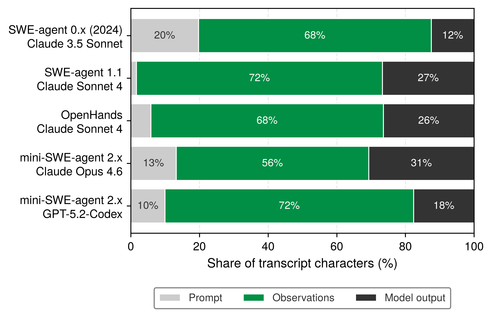
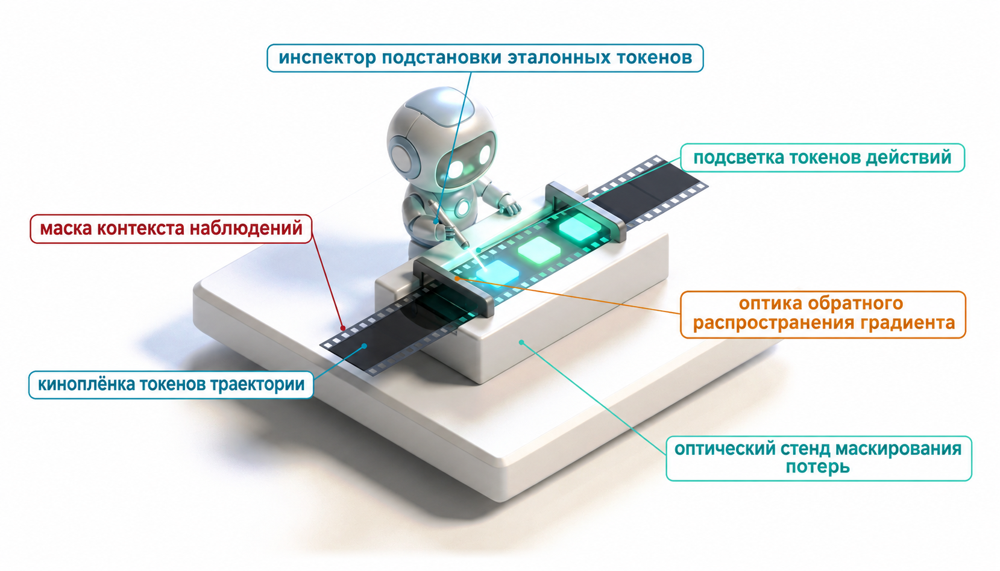
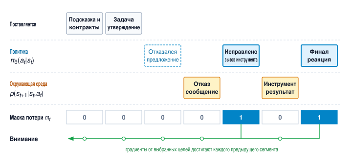
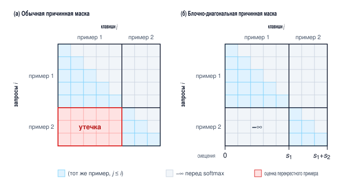
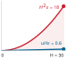
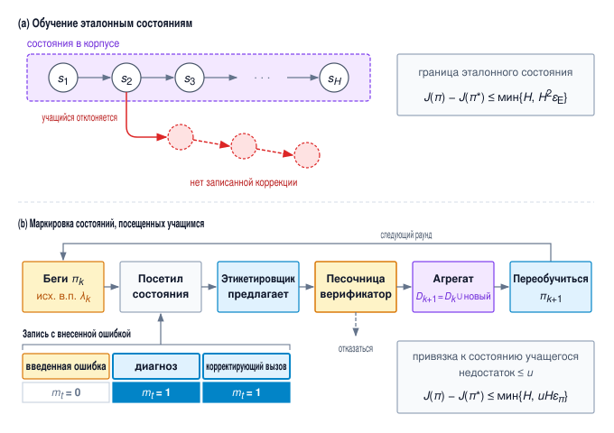

Содержание главы
Содержание
- 16 Дообучение на траекториях
- 16.1 Записи восстановления как тренировочные данные
- 16.2 Границы контролируемого дообучения
- 16.3 Сериализация траекторий
- 16.4 Маскирование лосса наблюдений
- 16.5 Формирование батчей из траекторий переменной длины
- 16.6 Смещение при экспозиции
- 16.7 Устойчивость к схемам
- 16.8 Оптимизация предпочтений траекторий
- 16.9 Дистилляция политики
- 16.10 Дообучение с малым числом изменяемых параметров
- 16.11 Оценка дообученного агента
- 16.12 Практический кейс: обучение политики восстановления
- 16.13 Заблуждения и подводные камни
- 16.14 Итоги
- 16.15 Историческая перспектива и дополнительное чтение
- 16.16 Упражнения
16 Дообучение на траекториях

Назначение
Почему обучение на полезной записи восстановления может научить модель повторять ошибку вместо исправления?
Если промпт-инженерия и защитные механизмы на этапе исполнения (runtime guardrails) лишь направляют готовую модель, то дообучение изменяет веса нейронной сети напрямую, встраивая специализированные политики принятия решений и соглашения о вызове инструментов в параметры модели. Однако обучение на многоходовых траекториях требует строгого разделения предложений агента и наблюдений внешней среды, чтобы лосс имитации применялся только к выбранным ответам политики, а обратная связь от среды оставалась контекстом кондиционирования. Наивное дообучение может научить политику выдумывать собственные результаты инструментов или переобучиться на статичной раскладке рабочего пространства, деградировав общее рассуждение и восстановление после ошибок. Системная инженерия управляет тем, как разбиваются датасеты, как применяются маски лосса и как обновлённые контрольные точки валидируются на регрессионных наборах перед развёртыванием. Обновление стоит выпускать только тогда, когда закрытая приёмка задач улучшается при том же runtime, который по-прежнему ограничивает каждое предложение модели, как бы низко ни упал её тренировочный лосс.
Цели обучения
- Распределять поведение агента между весами, контекстом и runtime и решать, когда сбой оправдывает изменение весов
- Строить входы модели так, чтобы сохранить задуманное кондиционирование и учесть цену сериализации каждого вызова в тренировочных токенах
- Сопоставлять допустимые диапазоны ответов каузальным целевым токенам, маскам наблюдений и политике завершения
- Сравнивать взвешивание лосса и формировать батчи без нежелательных межпримерных зависимостей
- Вычислять границы имитационного сожаления (imitation regret) на эталонных и учебных состояниях, чтобы решить, когда маркировка on-policy состояний оправдана
- Вычислять маржинальные предпочтения и веса градиентов и отличать, что измеряет сравнение, от приёмки задач
- Выбирать источники поведения и параметрические артефакты с явным учётом ресурсов и версий
- Оценивать версионированную политику к выпуску по закрытой приёмке задач, стоимости на принятую задачу и переносу схем, сохраняя принуждение на стороне runtime
16.1 Записи восстановления как тренировочные данные

Дообучение преобразует каждый вызов модели, но оставляет все воздействия среде исполнения.
Рассмотрим демонстрацию восстановления, допущенную конвейером курирования для агента по ремонту (Четыре маяка — рабочие нагрузки) в repair_demonstrations_v1. В записанной сессии агент сгенерировал некорректное предложение правки, которое валидатор runtime отклонил до диспетчеризации инструмента. В ответ на уведомление о сбое модель изучила схему инструмента, сгенерировала исправленную правку и создала кандидатный патч ws_r20. Из этой многоходовой траектории политика выбора целей recovery_targets_v1 помечает три хода ассистента как контролируемые цели: запрос на изучение схемы (e3), исправленную правку (e4) и итоговое резюме (e6). Некорректное предложение (e2) и отказ runtime остаются во входной истории как контекст кондиционирования. Элемент, попавший в корпус, — это обезличенный вид trace_r19_01_redacted_v1, и манифест корпуса связывает его с этими назначениями ролей, его происхождением и принадлежностью к разбиению.
Сырой журнал событий допущенной записи ещё не в той форме, которую тренировочный цикл может безопасно потреблять, потому что он перемешивает генерации модели, наблюдения runtime и ответы инструментов в порядке их возникновения. Если загрузчик данных считает каждое сообщение ассистента контролируемой целью, он вычисляет лосс и на некорректной правке наряду с исправлением, подкрепляя исходную ошибку. Если тренировочный конвейер вычисляет лосс по всем токенам последовательности без разбора, модель расходует ёмкость параметров на предсказание детерминированных ответов среды, таких как диагностика компилятора или листинги каталогов, которые она никогда не будет порождать при инференсе. Наконец, если конвейер батчей упаковывает несколько траекторий в общее окно контекста без маскирования внимания, головы self-attention пересекают границы примеров и утекают приватное содержимое рабочего пространства в несвязанные тренировочные примеры. Стандартный кросс-энтропийный лосс молча не срабатывает при каждой из этих ошибок. Тренировочный лосс планомерно падает по мере того, как оптимизатор подгоняется под данные, скрывая испорченное поведение от офлайн-метрик. Хотя контракты курирования решают, какие действия демонстрируют желаемое поведение, а контракты оценки измеряют развёрнутого агента, ни один из них не задаёт, как превратить многоходовой трейс исполнения в изолированные, каузальные градиентные обновления.
Путь от допущенной записи к оценённому обновлению политики начинается с вопроса, который курирование оставляет открытым, а именно: какие части поведения по ремонту вообще должны находиться в весах (Глава 16.2). Ответ фиксирует, что должен защищать конвейер данных. Сериализация восстанавливает каждый вход модели в точности так, как его получил агент (Глава 16.3), маскирование лосса помещает градиент на выбранные ответы и никуда больше (Глава 16.4), а формирование батчей разделяет буферы, не позволяя примерам читать друг друга или перекашивать веса друг друга (Глава 16.5). Маскирование и батчинг напрямую защищают от тех трёх безмолвных сбоев, а сериализация защищает посылку, на которой держатся оба, — что каждый префикс есть именно тот, который модель реально видела.
Даже корректный загрузчик обучается на записанных префиксах, а развёрнутая политика действует на префиксах, порождённых её собственными решениями. Смещение экспозиции (exposure bias) оценивает этот разрыв по горизонту и решает, когда маркировка состояний самого ученика оправдана (Глава 16.6), а устойчивость схем задаёт тот же вопрос об интерфейсах инструментов, которые показаны политике (Глава 16.7). Оставшиеся разделы варьируют само обновление по трём независимым выборам. Первый — целевая функция: оптимизация предпочтений противопоставляет валидные альтернативы, которые имитация не может ранжировать (Глава 16.8). Второй — источник поведения: дистилляция переносит поведение более дорогой конфигурации в более дешёвую (Глава 16.9). Последний — параметрический артефакт: адаптеры меняют то, что прогон должен сохранять (Глава 16.10). Закрытая (closed-loop) оценка решает, заслужил ли любой из них релиз (Глава 16.11), а тренировочный манифест политики ремонта собирает всю цепочку воедино (Глава 16.12).
16.2 Границы контролируемого дообучения
Прежде чем превращать допущенную запись, например trace_r19_01_redacted_v1, в обновление весов, инженеры должны решить, должен ли исправленный ею сбой вообще находиться в параметрах модели. Дообучить модель, чтобы обойти отсутствующую инструкцию в промпте или сломанную схему инструмента, — значит запечь временное обходное решение в миллиарды весов, чтобы поведение снова сломалось при следующем изменении интерфейса. Изменение весов модели — дорогая операция с большим радиусом поражения, зарезервированная для поведенческих сбоев, которые переживают более дешёвые исправления. Лестница вмешательств упорядочивает изменения по стоимости и обратимости, поэтому инженеры сначала проверяют исправления промпта, схемы и runtime, прежде чем тратить вычисления на обновление параметров, хотя диагностические данные могут оправдать прямое обновление весов, когда виновата сама политика. Верифицированный трейнинговый пост-трейнинг на траекториях (принцип «Пост-обучение на верифицированных траекториях») требует от курирования связать записанные доказательства с заявленным учебным использованием и отделить допустимые цели от контекстных или отклонённых действий. Хотя такой порядок является порядком по умолчанию по стоимости и радиусу поражения, дообучение также оправдано, когда перенос стабильного процедурного знания в веса стоит дешевле, чем пересылать длинный инструктивный префикс на каждом ходу (Глава 16.9).
↩︎ Лестница вмешательств, упорядочивающая вмешательства в контекст, схемы, runtime и параметры по стоимости и обратимости, вводится в Лестница вмешательств.
Когда диагностические данные оправдывают обновление параметров, контролируемое дообучение (SFT) подстраивает обучаемые параметры модели так, чтобы максимизировать условное правдоподобие выбранных целевых токенов при их каузальном префиксном контексте. При обработке trace_r19_01_redacted_v1 тренировочный цикл должен следовать последовательности восстановления, заданной в recovery_targets_v1, а не вычислять лосс по каждому записанному токену. Модель должна видеть исторический контекст и выходы инструментов, обосновывающие выбранное действие, но конвейер данных должен исключить более поздние шаги, которые преждевременно раскрывали бы будущие наблюдения или решения. Поэтому дообучение на траекториях наследует два контракта данных: контракт выбора целей, определяющий, какие токены вносят вклад в градиент лосса, и контракт кондиционирования, управляющий тем, какую каузальную историю видит модель при порождении этих токенов.
Два контракта разделяют обучение улучшенному поведению и переобучение на единичной характерной сессии. В траектории восстановления после ошибки поведенческая цель — научить модель изучать обновлённую схему после отказа, выдавать корректно сформированный корректирующий вызов и интерпретировать то, что устанавливает проверка верификации runtime. Запоминание путей к файлам конкретного тестового фикстура или предсказание захардкоженных тестовых выходов снижает тренировочный лосс, не обучая переносимым навыкам восстановления. Переносит ли обновлённая политика эти привычки в незнакомые среды и новые задачи — измеряет Глава 16.11, а сохранение обобщаемости обновления начинается с решения о том, какие части поведения агента живут в весах, а какие — в промпте и runtime.
16.2.1 Процедура, контракты и принуждение
Если дообученный агент по ремонту запомнит сигнатуру API в параметрах вместо чтения промпта, рутинное изменение интерфейса инструмента — например, добавление обязательного параметра или отзыв разрешения — немедленно сломает развёрнутую политику. Каждый ответ агента сочетает статические веса модели с динамическим окном контекста, собранным для этого вызова, а дообучение обновляет только веса. Поэтому инженеры распределяют поведение агента по трём архитектурным «жилищам», сведённым в Таблица 1:
- Процедура — поведение, стабильное между задачами и меняющееся медленно, например изучение диагностического вывода до модификации исходного кода или проверка нерешённых вопросов до сообщения о завершении. Процедура — то, что веса модели могут надёжно впитать.
- Контракты — динамические операционные факты, меняющиеся между развёртываниями, сессиями пользователей и отдельными ходами: определения API-инструментов, требования схем, параметры среды и выданные разрешения. Контракты принадлежат контексту промпта; модель, запомнившая прежнюю схему, продолжит порождать устаревшие аргументы при изменении интерфейса.
- Принуждение охватывает инварианты, которые должны выполняться, даже когда модель предлагает невалидное или злоумышленное действие: валидацию схем, проверки авторизации, изоляцию в песочнице и таймауты исполнения. Принуждение остаётся в детерминированном каркасе runtime в силу инвариантного замыкания (принцип 1).
| Домен | Намеченная ответственность | Следствие для дообучения |
|---|---|---|
| Веса | Изученные процедуры и склонности к ответам, включая выбор инструментов и поведение восстановления | Обновить распределение предложений, затем измерить, помогает ли изменённое поведение при заявленных условиях задачи |
| Контекст | Текущие факты задачи, схемы инструментов, наблюдения и представленный охват | Поставить информацию, которая нужна политике сейчас; не полагаться на запомненные версии как на источник текущих фактов или разрешений |
| Runtime | Валидация, авторизация, изоляция, контроль ресурсов и сбор доказательств | Сохранить принуждение независимо от изученной политики; предсказанный моделью результат — не наблюдаемый внешний эффект |
Полагаться на параметры для хранения интерфейсных контрактов делает развёртывание хрупким, потому что отозванное разрешение остаётся отозванным независимо от того, как часто действие встречалось в прошлых тренировочных демонстрациях. Дообучение не может заменить динамические контракты; чему оно может научить — так это привычке читать и следовать тому контракту, который поставляет окно контекста.
Эта граница опровергает взгляд, будто дообучение лишь переносит промпт в веса. Только процедурные части промпта (структурированные указания по рассуждению, диагностические чек-листы или few-shot примеры восстановления после ошибок) принадлежат параметрам, где они экономят накладные расходы токенов на каждом ходу (Глава 16.9). Контрактные части должны оставаться в контексте промпта, потому что их отсутствие заставляет модель угадывать текущую среду исполнения. Детерминированные проверки, обеспечивающие авторизацию и граничные инварианты, не могут жить ни в промптах, ни в весах, потому что распределение вероятностей над токенами не может гарантировать инвариант.
Дообучение меняет распределение предложений политики: какие инструменты она запрашивает, насколько тщательно изучает диагностические данные и какие пути исполнения пробует. Эти сдвиги меняют долю успешных задач, сквозную задержку и расход токенов, но каждое предложенное действие всё ещё исполняется в пределах горизонтов, переходов состояний и границ полномочий, обеспечиваемых каркасом runtime. Это разделение — граница предложений из Граница вызова модели. Обучение преобразует то, что политика предлагает, тогда как runtime решает, какие действия могут исполниться, и эта граница управляет каждым последующим решением об адаптации.
16.2.2 Целевая функция, источник поведения и артефакт
Решение, что привычка восстановления должна жить в весах, всё ещё оставляет команде выбор: имитировать одиночные исправления или ранжировать конкурирующие ремонты, обучаться на записанных журналах или собирать свежие траектории, поставлять полную копию контрольной точки или лёгкий адаптер. Трактовка «дообучения» как единственной ручки затемняет, какое решение ответственно, когда обновление переобучается или превышает бюджет памяти, поэтому конвейер разделяет адаптацию по трём независимым осям:
- Целевая функция обучения: лосс, задающий сигнал обучения. Контролируемая имитация максимизирует правдоподобие отобранных целевых демонстраций, тогда как методы предпочтений, такие как прямая оптимизация предпочтений (Глава 16.8), подстраивают веса, противопоставляя предпочтительные траектории непредпочтительным альтернативам по явному правилу ранжирования.
- Источник поведения: откуда берутся демонстрации и входы кондиционирования. Трейсы могут собираться с инструментированных производственных прогонов и фильтроваться офлайн-верификацией, порождаться учительской конфигурацией с привилегированным контекстом или большим поисковым бюджетом (Глава 16.9), маркироваться на состояниях, которых достигает сам ученик, или конструироваться инъекцией сбоев, которых записи не содержали (Глава 16.6.2).
- Параметрический артефакт: какие веса прогон обновляет и сохраняет. Команды могут обновлять все параметры модели напрямую или обучать компактные матрицы-адаптеры, такие как модули низкоранговой адаптации (LoRA), присоединяемые к замороженной базовой контрольной точке (Глава 16.10).
Поскольку эти три выбора независимы, они свободно комбинируются; развёртывание может, например, обучать низкоранговый адаптер с целевой функцией предпочтений на синтетических учительских демонстрациях. Какую бы комбинацию ни выбрала команда, прогон всё равно обучается на записях траекторий, преобразованных во входы модели, поэтому первый шаг конвейера — восстановление входного префикса и окна кондиционирования для каждого выбранного ответа.
16.3 Сериализация траекторий
В допущенной демонстрации ремонта trace_r19_01_redacted_v1 исправленная правка (e4) имеет смысл только как ответ на некорректное предложение (e2), отказ runtime и предшествующее изучение схемы (e3). Загрузчик, выбрасывающий отказ, меняет задачу, на которую отвечала последующая коррекция, а загрузчик, ставящий более позднюю успешную тестовую проверку (e5) до правки, утекает будущие доказательства, которых модель не имела, предлагая патч. Пока курирование выбирает, какие завершения модели подкреплять, сериализация должна восстановить точный промпт и историю наблюдений, вызвавших их, включая любые обезличивания runtime (например, синтетические заполнители вместо приватных путей к файлам), чтобы тренировочный пример соответствовал контексту, который модель реально видела.
16.3.1 Восстановление каждого входа модели
Журналы событий runtime фиксируют переходы состояний по всему каркасу, но журнал событий сам по себе не показывает, что находилось в окне контекста модели при данном вызове. Системные промпты меняются, схемы инструментов обновляются между версиями, а более ранние сообщения часто сжимаются или усекаются, чтобы уложиться в бюджет токенов. Чтобы точно восстановить вход каждого вызова, тренировочный конвейер читает манифесты доставленных входов, в которых записаны точные сообщения, определения инструментов, резюме и ограниченные наблюдения, отправленные модели, вместе с их версиями схем.
↩︎ Манифест доставленных входных данных, фиксирующий точную полезную нагрузку, отправленную модели, — а не изменяемые пути или ссылки, — вводится в Схема события журнала.
Когда примеру требуется историческая точность, загрузчик сериализует выбранное обращение напрямую из его манифеста доставленных входных данных, сохраняя частичные буферы, обрезанные выводы и ошибки исполнения, а не подставляя более «чистый» результат, полученный позже в ходе работы. Если же конвейер преобразует пример намеренно — например, сокращая промпты для дистилляции контекста (Глава 16.9), — он применяет ревьюированное преобразование и к промпту, и к парному ответу, сохраняет ссылку на родительскую трассу и заново проверяет совместимость схем. Таблица 2 показывает, как курированные ответы в текущей демонстрации ремонта сопоставляются со своими свидетельствами обусловливания; в отрендеренном обучающем примере каждая строка дополнительно несёт системные инструкции и активные определения инструментов, доставленные на этом ходе.
| Выбранный ответ | Релевантное свидетельство обусловливания | Содержание ответа, выбранное курированием |
|---|---|---|
e3 |
Ранее доставленный контекст задачи и некорректное предложение e2 с его предотправочным отказом |
Запрос на просмотр доступной схемы |
e4 |
Соответствующая возвращённая схема и сохранённый контекст, обосновывающий правку | Исправленная правка с её условием по версии |
e6 |
Сводка проверки, доставленная в e5 для конкретного кандидата, и сохранённые свидетельства о рамках отчёта |
Итоговый отчёт о подтверждённом результате и ограничениях |
Отказ в e2 показывает, что валидация во время исполнения перехватила некорректное предложение до отправки, поэтому ни один инструмент не запускался на хосте. Поскольку сводка проверки в e5 пришла лишь после того, как агент выпустил исправленную правку, она может обусловливать итоговый отчёт в e6, но не может появиться в префиксе для e4. Выбор запроса схемы в e3 аналогичным образом обучает токены запроса модели, оставляя возвращённую схему внешним наблюдением, так что маскирование лосса на следующем этапе сможет отделить решения модели от ответов среды.
16.3.2 Рендеринг с версионированными шаблонами
Когда доставленные сообщения для e3, e4 и e6 реконструированы, загрузчик должен превратить эти структурированные объекты сообщений (системные инструкции, промпты пользователя, рассуждения ассистента, вызовы инструментов и возвраты среды) в точную последовательность токенов, которую модель ожидает во время обслуживания. Шаблоны чата различаются между семействами моделей, и даже контрольные точки одной базовой модели часто по-разному форматируют схемы инструментов, параллельные вызовы или границы сообщений. Рендеринг траектории с разделителями, не совпадающими с парсером обслуживания, обучит политику синтаксису, который продакшен отвергнет. Поэтому сериализованный датасет-артефакт записывает версию токенизатора, конфигурацию шаблона, схему форматирования инструментов и политику границ ответа рядом с массивами токенов: последовательность сообщений и её конфигурация рендеринга вместе образуют вход модели.
В схематичном виде пример многоходового вызова инструментов выглядит как приведённая ниже последовательность. Строки-разделители — иллюстративные заполнители, поскольку каждое семейство моделей определяет свои специальные токены. Системный сегмент задаёт контракт задачи и определения инструментов. Сегмент ассистента выдаёт трассу рассуждений, за которой следуют два параллельных вызова инструментов с уникальными идентификаторами. Каждый сегмент инструмента возвращает наблюдение, привязанное к идентификатору его вызова.
<|system|> task contract; schemas for read_file(target_uri), run_tests(target) <|end|>
<|user|> Fix the connection-pool leak in src/pool.py <|end|>
<|assistant|> <|reasoning|> Reproduce the failure, then read the module. <|end_reasoning|>
<|call id=c1|> {"name": "read_file", "arguments": {"target_uri": "src/pool.py"}} <|end_call|>
<|call id=c2|> {"name": "run_tests", "arguments": {"target": "tests/test_pool.py"}} <|end_call|>
<|end_turn|>
<|tool id=c2|> FAILED test_release: pool exhausted <|end|>
<|tool id=c1|> ...file contents... <|end|>
<|assistant|> ...В этой последовательности c2 завершается раньше c1, и, поскольку среда исполнения доставляет наблюдения в порядке прибытия, листинг ставит ответ c2 первым, чтобы совпасть с промптом, который модель фактически получила на следующем ходе. Идентификаторы вызовов удерживают каждое наблюдение привязанным к исходному вызову независимо от порядка прибытия. Пересортировка ответов в порядке вызовов (c1, затем c2) «для аккуратности» изобрела бы промпт, который модель никогда не видела, а изменение порядка вызовов, аргументы или наблюдения которых зависят друг от друга, превращает каузальную задачу в синтетическую трансформацию, требующую собственной валидации. Токен <|end_turn|> отмечает место, где политика вернула управление циклу среды исполнения, тогда как все токены между <|tool|> и <|end|> — внешние наблюдения.
Обучающий конвейер упаковывает этот отрендеренный датасет как serialization_v1, чей манифест сопоставляет допущенные записи исполнения с активной конфигурацией рендеринга и отображает каждый выбранный диапазон ответа в его смещения токенов. Поскольку токенизация, форматирование шаблоном и редактирование строк могут сдвигать границы токенов (например, когда ведущий пробел сливается с соседним специальным токеном), конвейер заново проверяет все смещения токенов против отрендеренного массива токенов и декодирует завершённые примеры, чтобы проверить промпты задач, привязки инструментов, границы диапазонов и маркеры конца последовательности. Если пример не проходит выравнивание границ или теряет содержимое, конвейер отбрасывает запись, а не латает её синтетическим наполнителем.
Разделители ролей задают синтаксис протокола, но не несут полномочий во время исполнения: если модель порождает текст, имитирующий разделитель <|tool|>, этот текст остаётся выходом модели в рамках грамматики токенизатора, и конвейер сериализации никогда не повышает неподтверждённые генерации до наблюдений среды. Когда шаблон фиксирует способ рендеринга каждого хода, конвейеру ещё предстоит решить, можно ли хранить многоходовую траекторию как одну отрендеренную последовательность или её нужно разбить на отдельные примеры по одному на каждое обращение.
↩︎ Правило о том, что выход модели — это предложение, не несущее полномочий до валидации средой исполнения, установлено в Граница вызова модели.
16.3.3 Один пример на обращение
Поскольку среда исполнения агента по ремонту уплотняет историю, как только рабочий набор пересекает свой водяной знак, ход, доставленный после уплотнения, видел сводный дайджест, а не сырые более ранние ходы, которые одиночная склеенная транскрипция разместила бы перед ним. Одиночная склеенная транскрипция — верный обучающий пример лишь тогда, когда среда обслуживания дописывает каждый ход без обрезания ранних шагов, уплотнения промежуточного контекста или отбрасывания черновиков рассуждений ради экономии памяти KV-кэша. Всякий раз, когда обслуживание обрезает или уплотняет историю между шагами так, что поздние каузальные префиксы больше не совпадают с растущей транскрипцией, загрузчик должен сериализовать каждое обращение как отдельный обучающий пример, содержащий точный доставленный префикс этого вызова.
↩︎ Уплотнение по водяному знаку, заменяющее более ранние ходы дайджестом между обращениями, установлено в Сжатие контекста.
Посегментная сериализация каждого вызова несёт ту же треугольную стоимость в токенах, которая уже оценивала траекторию с дописыванием во время обслуживания (Уравнение (9)), — теперь оплаченную в сохраняемых обучающих токенах. Если траектория охватывает
Когда serialization_v1 собран, конвейер располагает токенизированными последовательностями, их префиксами обусловливания и диапазонами ответов, выбранными при курировании. Следующий шаг — решить, какие позиции токенов вносят вклад в обучающий лосс, поскольку вычисление кросс-энтропии по всей многоходовой последовательности наказывало бы модель за неспособность предсказать выводы инструментов и сообщения пользователя.
16.4 Маскирование лосса наблюдений
В serialization_v1 массив токенов траектории ремонта всё ещё содержит промпт, некорректное предложение e2, отказ среды исполнения, возвращённую схему и сводку проверки e5 наряду с выбранными ответами e3, e4 и e6. Загрузчик, выбирающий каждый токен ассистента, обучает модель на некорректном предложении e2 вместе с его исправлением e4, отменяя курирование, а загрузчик, вычисляющий лосс по всем токенам, обучает политику предсказывать ответы среды. Сериализация превращает взаимодействие в токены; маска лосса решает, какие из этих токенов порождают градиентные обновления.
16.4.1 Маскированная целевая функция
Пусть
Каждый выбранный токен предсказывается по записанному префиксу
В текущей траектории ремонта target_mask_v1 отображает ревьюированные диапазоны ответов на массив токенов serialization_v1, отделяя целевые позиции от контекста обусловливания (Таблица 3). Поскольку изменение словаря токенизатора, шаблона чата или текстового преобразования может сдвинуть границы токенов, конвейер регенерирует и проверяет маски против финальных сериализованных токенов, а не копирует смещения с более раннего этапа.
| Сегмент токенов | Целевая политика для этой имитационной задачи | Что остаётся контекстным входом |
|---|---|---|
| Промпт и предоставленные контракты инструментов | Фактическая задача, текущие интерфейсы и предоставленные ограничения | |
| Выбранный ответ политики | Более ранние токены ответа и его доступный префикс | |
| Невыбранный ответ политики, включая отвергнутое предложение | История, необходимая для интерпретации выбранного исправления | |
| Наблюдение инструмента или среды | Доставленные результаты, ошибки и свидетельства, доступные до следующего ответа | |
| Опциональное авторизованное обоснование | Выбирается объявленной целевой политикой | Удержанное обоснование остаётся видимым, выбрано оно или нет |
| Граничный токен завершения | Выбирайте подлинный сгенерированный политикой терминатор, обучая выбранный ответ завершаться | Не подменяйте граничный токен роли инструмента и не выдумывайте терминатор для обрезанного ответа |
Когда у примера нет выбранных целей (
Определение 16.1: Маскирование лосса наблюдений
Маскирование лосса наблюдений исключает предоставленные наблюдения из прямого лосса предсказания токенов, сохраняя разрешённый контекст наблюдений, необходимый для обучения выбранных ответов политики.
- Значимость: Фокусирует целевую функцию оптимизации на условном распределении политики
, так что многословный вывод среды не может размыть градиент на действиях политики независимо от того, сколько контекста занимают наблюдения (ноутбук 16.1 количественно оценивает это размытие). - Отличие: Маскированные токены остаются во входном контексте и участвуют в self-attention; обнуляются только их члены лосса для следующего токена. Само по себе авторство политики не делает токен целью: отвергнутые попытки или небезопасные действия тоже маскируются, даже будучи порождёнными в роли ассистента.
- Типичная ошибка: Выбор всего многоходового обмена с инструментами только потому, что вызов инструмента завершился успехом, — это обучает модель предсказывать ответы внешней среды.
Развёрнутая траектория агента чередует два разных генератора: политику агента и внешнюю среду. Обучение без маскирования наблюдений заставляет один набор весов подгонять оба распределения одновременно:
- Политика агента
, отображающая предшествующие наблюдения и инструкции в вызовы инструментов или ответы. - Модель динамики среды
, предсказывающая выводы, возвращаемые оболочками, базами данных или удалёнными API.
Поскольку реальные инструменты во время развёртывания выполняются и возвращают фактические выводы, тратить ёмкость модели на предсказание возвратов среды — напрасная работа, а супервизия распределения среды приводит к двум конкретным сбоям:
- Размытие лосса: При усреднённой по токенам кросс-энтропии размаскирование расширяет знаменатель с
до всех каузальных членов предсказания (каждая сохранённая позиция после начальной границы). Градиентный вес каждого токена решения уменьшается в отношении выбранных целей к предсказываемым позициям (вычисляется в ноутбуке 16.1), а остаток бюджета лосса уходит на пути к файлам, стек-трейсы, дампы компилятора и JSON-полезные нагрузки. Повторяющийся шаблонный текст тянет средний лосс вниз, тогда как новые стек-трейсы или содержимое файлов доминируют в градиенте; в любом случае среднее перестаёт измерять политику. - Путаница ролей: Обученная предсказывать токены, следующие за вызовом инструмента, политика усваивает, что выводы инструментов продолжают тот же авторегрессионный поток. Во время обслуживания она может продолжать генерацию после собственного вызова инструмента и написать сфабрикованный результат инструмента вместо эмиссии стоп-токена, возвращающего управление среде исполнения. Поскольку среда исполнения отвергает неаутентифицированные наблюдения (Глава 16.3), сфабрикованные токены отбрасываются, расходуя выходной бюджет и блокируя ход.
Полная запись ремонта выбирает три ответа (e3, e4 и e6). В упрощённом виде на Рисунок 1, который опускает запрос схемы e3 и его возвращённую схему, только два из семи показанных сегментов (исправленный вызов инструмента и финальный ответ) несут

Маскирование наблюдений устраняет сразу две проблемы на уровне целевой функции — размывание лосса и путаницу ролей, — а проверки в замкнутом цикле подтверждают, что обученная модель останавливается на границах инструментов. Реализация этого маскированного критерия в коде требует согласования каждого бита маски
16.4.2 Каузальное выравнивание меток
Сдвиг на одну позицию между входными токенами и целевыми масками незаметно искажает каждую границу инструмента в корпусе: первый токен каждой выбранной реакции маскируется, а модель обучается предсказывать первый токен следующего наблюдения от инструмента. Во многих обучающих фреймворках сдвиг меток на одну позицию выполняется внутри их собственной функции лосса, поэтому сдвиг, сделанный один раз в загрузчике и второй раз в лоссе, рассогласует все целевые маски по всему датасету. В каузальной авторегрессионной модели,2 скрытое состояние на входной позиции
| Логиты вычислены по префиксу, заканчивающемуся на… | Метка следующего токена | Целевая маска |
|---|---|---|
| Последний поданный токен промпта | Первый токен выбранной реакции политики | |
| Последний содержательный токен выбранной реакции | Её подлинный сгенерированный политикой конечный токен | |
| Конечный токен перед доставленным наблюдением от инструмента | Первый токен этого наблюдения |
Пусть
При
16.4.3 Выбранные целевые токены и вычисления
Наблюдения занимают 77,1 процента входа; лосс приходится на 4,9 процента.
Поскольку каждый замаскированный токен наблюдения всё равно проходит через само-внимание, обнуление его слагаемого лосса не убирает почти ни одного из вычислений прямого прохода. Число выбранных позиций
Инженерный расчёт 16.1: Сохранённые токены и выбранные целевые токены
Задача: У гипотетического сериализованного примера количество сегментов указано в Таблица 5. Его запись куририрования исключает некоторые позиции реакций политики из имитации, сохраняя их как контекст. Если опциональное обоснование либо выбирается целевым, либо остаётся только контекстом, то сколько позиций получают прямой лосс, какую долю сохранённого входа они занимают и во сколько раз размыл бы их немаскированный лосс?
Таблица 5: Гипотетическая опись входа: Эти непересекающиеся счётчики включают каждую сохранённую позицию. Они не являются измерениями общего ремонта в прогоне.
Таблица 6: Две политики целевых токенов на одном входе: исключение сегмента из целевой функции не укорачивает последовательность кондиционирования.
| Сегмент входа | Сохранённых токенов |
|---|---|
| Системный промпт и схемы, включая начальную границу | 1,200 |
| Постановка задачи | 184 |
| Опциональное авторизованное обоснование | 1,400 |
| Другие реакции политики, включая подлинные конечные токены | 960 |
| Доставленные наблюдения | 12,640 |
Переменные: Ровно 160 позиций других реакций политики принадлежат отклонённому предложению и остаются контекстом; все прочие позиции реакций выбраны. Обоснование проверено для обеих политик целевых токенов, обе политики видят один и тот же вход, начальная позиция принадлежит промпту, и паддинга нет.
Математика: Непересекающиеся сегменты в сумме дают 16,384 сохранённых токенов, из которых наблюдения занимают 77.1 percent. Удаление отклонённых позиций оставляет 960
| Политика целевых токенов | Выбранных позиций, |
Выбранная доля сохранённого входа |
|---|---|---|
| Выбранные реакции плюс проверенное обоснование | 2,200 | 13.4% |
| Выбранные реакции; обоснование остаётся только контекстом | 800 | 4.9% |
Результат: Обе маски помещают весь лосс на небольшое меньшинство сохранённых позиций и оставляют контекст неизменным; они различаются лишь тем, является ли обоснование целевым токеном.
Системный вывод: Поскольку коэффициент размывания обратно пропорционален выбранной доле позиций предсказания, он быстро растёт по мере накопления взаимодействий со средой. Удвоение объёма наблюдений при неизменной длине реакций увеличивает размывание с 20.5× до 36.3×. Следовательно, маскирование наблюдений становится всё более необходимым по мере того, как агенты берутся за глубокие следы рассуждений с интенсивным использованием инструментов. Однако маскирование даёт пренебрежимое снижение FLOPs: каждый замаскированный токен всё равно должен пройти через каузальные слои внимания, чтобы сформировать контекст для последующих предсказаний. Пропустить на замаскированных позициях можно только финальную проекцию языковой головы модели и вычисление перекрёстной энтропии.
Записанные траектории ремонта показывают, что пропорции гипотетической описи реалистичны. Рисунок 2 разбивает транскрипты пяти опубликованных конфигураций агентов на одних и тех же задачах ремонта репозитория (Jimenez и др. 2024 г.) по роли, породившей каждое сообщение.
Для 5 конфигураций и 2,100 прогонов наблюдения составляют от 56 до 72 percent транскрипта, а выход модели — лишь от 12 до 31 percent. Эти доли считают каждое сообщение один раз. Сериализация одного примера на вызов повторяет растущий префикс в каждом примере, поэтому доля наблюдений в сохранённом обучающем входе ещё больше и приближается к пропорции описи. Маска, таким образом, — не косметика, применяемая к немногим многословным вызовам инструментов; в записанной работе по ремонту она решает судьбу большей части последовательности.
16.4.4 Опциональное обоснование: целевой токен или контекст
Даже внутри доли траектории, сгенерированной моделью, маскирование черновика цепочки рассуждений при обучении в сочетании с ожиданием, что развёрнутая политика будет действовать без какого-либо черновика во время обслуживания, обучает модель на контексте кондиционирования, которого у неё не будет в продакшене. Когда датасет содержит промежуточные следы рассуждений или планы использования инструментов вместе с вызовами инструментов, загрузчик должен выбрать один из трёх режимов маскирования (Таблица 7), соответствующий тому, как модель будет обслуживаться. Обучение с надзором за обоснованием учит модель генерировать собственные рассуждения перед вызовом инструментов. Удержание обоснования под маской лосса трактует рассуждения как поданный контекст кондиционирования, обучая модель действовать по планам, предоставленным внешним оркестратором или пользователем. Полное удаление обоснования меняет условное распределение, так что политика действует только по контексту.
Формально, даны префикс контекста
| Обращение | Вход и прямые целевые токены | Вопрос обслуживания для оценки |
|---|---|---|
| Выбрать проверенное обоснование | Сохранить |
Достаточно ли улучшает сгенерированное обоснование заявленные результаты, чтобы оправдать затраты на его вывод и задержку? |
| Оставить обоснование только как контекст | Сохранить |
Как подходящее обоснование станет доступным и как ошибки в нём влияют на реакцию? |
| Удалить обоснование по проверенному преобразованию | Использовать |
Достаточно ли хорошо политика работает без удалённой информации кондиционирования? |
Во время обслуживания текст рассуждений подаётся либо внешним планировщиком, либо собственным авторегрессионным декодером политики. Когда модель генерирует обоснование сама, этот текст может отклониться от обучающих демонстраций, поэтому замкнутая оценка должна измерять, достаточно ли полезно сгенерированное обоснование, чтобы оправдать свои выходные токены и задержку.
16.4.5 Завершение и обрезанные ответы
Несёт ли ответ обоснование или только вызов инструмента, его маска должна также учитывать то, как ход завершается. Чтобы научить агента уступать управление, лосс обучения должен включать подлинный сгенерированный политикой стоп-токен (например, <|eom_id|> или <|im_end|>) в конце каждого полного выбранного ответа, а не путать его с разделителями хоста, которые помечают входящие полезные нагрузки инструментов. Без прямого контроля на стоп-токене политика может продолжать генерацию после конца корректного вызова инструмента, пока не упрётся в лимит вывода, вернув TRUNCATED вместо COMPLETED, так что правило карантина среды удержит предложение.
↩︎ Нормализованный статус TRUNCATED и правило карантина, удерживающее неполный кандидат, введены в Нормализованный конверт статуса.
Добавление синтетического токена конца хода к ответу, обрезанному контекстным окном или таймаутом, — это обучающий двойник той опасности, которую правило карантина блокирует на этапе обслуживания, где обрезанный аргумент rm -rf всё ещё разбирается как полная и более широкая команда. Обучающая сторона хуже: политика, научившаяся выдавать терминатор после частичной команды, даёт статус COMPLETED, который правило карантина пропускает. Когда ход был обрезан в записанной траектории, у загрузчика два корректных варианта:
- Консервативное исключение: полностью замаскировать обрезанный ход (
), сохранив более ранние полные ходы в траектории. - Контроль только по префиксу: вести контроль по корректным начальным токенам обрезанного хода вплоть до точки обрезания и опустить любой завершающий токен.
Всякий раз, когда траектории подвергаются обрезанию, скользящему окну упаковки или изменениям шаблона, конвейер данных пересчитывает целевые маски и проверяет, что
Контрольная точка 16.1: Защитите целевую маску
Когда маскирование лосса по каждому примеру на месте, загрузчик разделяет условный контекст и цели имитации внутри каждой последовательности. Однако обучение в масштабе объединяет траектории сильно различающейся длины в батчи между буферами устройств, и конвейер формирования батчей должен сохранить этот контракт по-примерно, не допуская утечки контекста между примерами и незаметного перекоса их весов.
16.5 Формирование батчей из траекторий переменной длины
Рассмотрим батч, где 30-ходовая трассировка отладки и исправления кода делит обучающий буфер с коротким одноходовым поиском файла. При обычной нижнетреугольной каузальной маске поиск может напрямую посещать промежуточные содержимое файлов и выводы инструментов из трассировки ремонта — контекст, которого у политики поиска не будет во время обслуживания. При усреднении по токенам многоходовая трассировка ремонта к тому же перевешивает краткий поиск в отношении их активных целевых токенов.
Построение батча из траекторий переменной длины, следовательно, сопрягает два системных решения: сколько градиентного веса получает каждая траектория в батчевом лоссе и как несколько последовательностей делят физическую буферную память без утечки контекста через границы последовательностей. Упаковка последовательностей — лишь раскладка памяти; корректная реализация сохраняет и объявленное взвешивание лосса, и изолированный предсказательный контекст каждого примера.
16.5.1 Нормализация лосса по примерам переменной длины
Пусть батч содержит
Усреднение по токенам в Уравнение 2 даёт равный вес лоссу каждого выбранного токена, тогда как усреднение по примерам в Уравнение 3 даёт равный вес среднему каждого примера. Оба учитывают только выбранные цели, никогда контекст или паддинг, и любая запись без выбранных целей исключается из обоих функционалов. Поскольку сериализованный пример может быть единичным вызовом, а не полной задачей, усреднение по примерам выравнивает сериализованные записи, а не лежащие в основе задачи, тогда как усреднение по токенам взвешивает каждую запись пропорционально её числу активных целей.
Разница становится критической, когда сериализация по вызовам разбивает одно многоходовое взаимодействие на отдельные обучающие записи. Если один из
| Свойство | Усреднение по токенам | Усреднение по примерам |
|---|---|---|
| Коэффициент при среднем примера |
||
| Коэффициент при лоссе выбранного токена | ||
| Что уравнивается | Лоссы выбранных токенов | Средние лоссы примеров |
Сохранение коэффициентов из Таблица 8 по всему кластеру требует соответствующего распределённого редукционного суммирования. Большой батч разбивается на микробатчи (срезы, обрабатываемые последовательно до шага параметров) и распределяется между воркерами параллелизма по данным (каждый держит копию модели и обрабатывает свою долю батча). Вычисление истинного глобального среднего по токенам, следовательно, требует суммирования активных токенных лоссов и счётчиков активных токенов по всем микробатчам и воркерам до деления. Прямое усреднение локальных средних микробатчей совпадает с глобальным токенным средним только когда каждый микробатч имеет в точности одинаковое число активных токенов. Когда траектории переменной длины делают эти счётчики разными, воркеры должны редуцировать сырые числители и знаменатели до взятия их отношения.
16.5.2 Изоляция примеров в упакованных буферах
Корректное редуцирование лосса решает, как батч взвешивает поиск файла и 30-ходовую трассу ремонта, но не то, как они делят память устройства. Упаковка обеих траекторий в один непрерывный буфер при обычной каузальной маске позволяет каждому запросу поиска читать содержимое файлов и наблюдения инструментов из трассы ремонта. Эта утечка между упакованными последовательностями — кросс-загрязнение,3 и её предотвращение — первоочередное требование корректности упаковки последовательностей (Krell и др. 2021 г.).
Определение 16.2: Упаковка последовательностей
Упаковка последовательностей помещает несколько обучающих примеров переменной длины в общие буферы, сохраняя их задуманные информационные границы и целевые маски лосса.
- Значимость: равномерный паддинг выделяет длину самого длинного примера каждой строке, снижая заполнение батча до отношения среднего к максимальной длине последовательности. Упаковка последовательностей возвращает эту потерянную ёмкость (ноутбук 16.2).
- Отличие: независимые траектории делят физические буферы памяти, не деля предсказательный контекст; многоходовые взаимодействия внутри отдельной траектории сохраняют доступ к своей полной истории.
- Типичная ошибка: применение стандартной каузальной маски поверх конкатенированных последовательностей, позволяющее поздним примерам нелегитимно посещать ранние.
Пусть
При обычной каузальной маске каждый запрос в более позднем примере может оценивать ключи в более раннем. Блочно-диагональная маска выставляет каждую из этих межпримерных записей в

Одна длинная траектория удерживает заполнение с паддингом на 19,1 процента; упаковка достигает 76,6 процента.
Вычислению лосса нужна та же граничная изоляция: сдвиг меток следующего токена через конкатенированный буфер без сброса на границах примеров обучает последний токен одного примера предсказывать начальный промпт-токен следующего. Начальный промпт-контекст каждого упакованного примера должен оставаться невыбранным (
Инженерный расчёт 16.2: Сохранённое заполнение и взвешивание целей
Задача: батч содержит одну длинную траекторию среди коротких. Сколько выделенного пространства последовательностей экономит упаковка по сравнению с равномерным паддингом и насколько по-разному две нормализации лосса взвешивают длинный и короткий пример?
Переменные: восемь гипотетических примеров имеют сохранённые длины
Математика: паддинг восьми строк до максимума выделяет
Для отдельной иллюстрации со счётчиками целей усреднение по токенам даёт коэффициенты
Системный вывод: заполнение с паддингом — это отношение среднего к максимальной длине, поэтому единственная самая длинная траектория задаёт потери: один пример с 32,768 токенов удерживает этот батч на 19.1 percent, а упаковка поднимает до 76.6 percent. Заполнение считает контекст и цели вместе, поэтому даваемая им пропускная способность измеряется на фактическом ядре внимания. Нормализация — отдельная ручка с столь же большим эффектом. Усреднение по токенам даёт длинному примеру вес 32× против веса короткого, а усреднение по примерам даёт им равный вес. Выбирайте усреднение по токенам, когда каждый выбранный токен должен считаться одинаково, и усреднение по примерам, когда несколько длинных траекторий не должны доминировать в обновлении.
16.5.3 Соглашения о позициях и проверки эквивалентности
Маски внимания и меток определяют, что читает и предсказывает каждая упакованная позиция, но каждый токен несёт ещё и индекс позиции. Если загрузчик не сбрасывает позиции в пределах буфера, второй упакованный пример начинается со смещения
Поворотные позиционные эмбеддинги (RoPE) — широко распространённая схема, кодирующая позицию поворотом векторов запроса и ключа на зависящие от позиции углы, — это тот случай, когда смещение доказуемо не играет роли, поэтому для них сброс позиций — операционное соглашение, а не математическое требование. В формулировке с фиксированными частотами позиция
Общий сдвиг, следовательно, оставляет внутрипримерные оценки внимания неизменными — прямое следствие конструкции RoPE с относительной позицией (Su и др. 2024 г.). Абсолютно-позиционные признаки, зависящее от позиции масштабирование частот и неассоциативность арифметики с плавающей запятой всё же могут нарушить эквивалентность для конкретной архитектуры, поэтому ни одна схема позиций не освобождена от проверки.
Общий ответ, таким образом, — это тест, а не доказательство. Тест корректности сравнивает логиты выбранных токенов и вычисленный лосс для одних и тех же примеров, обработанных отдельно и упакованными, при отключённых стохастических слоях и явно указанных численных допусках. Возмущение одного примера не должно менять логиты всех остальных примеров. Этот тест проверяет одновременно границы внимания, сдвиг меток, идентификаторы позиций и выбранный знаменатель. Когда он проходит, загрузчик чисто обучает продемонстрированной задаче. Однако обученная политика всё ещё должна действовать в контекстах, порождаемых её собственными решениями.
16.6 Смещение при экспозиции
Предположим, что политика ремонта, обученная на этом корпусе, помещена в новый ограниченный прогон и сталкивается с конфликтом версий вместо отклонения аргумента с ошибкой формата, зафиксированного в trace_r19_01_redacted_v1. Правдоподобный отказ: политика повторяет ранее принятую правку, не запросив сначала совместимые данные о состоянии. Защита условного обновления в среде исполнения блокирует устаревшую запись, и прогон исчерпывает выделенный лимит исполнения, не завершив ремонт. Обучающий корпус никогда не содержал этого состояния, так что ничто в нём не научило исправлению. Хотя сериализация и маскирование лосса сохраняют продемонстрированную задачу принятия решений, производственное развёртывание диктует, в каких состояниях агент реально оказывается. Политика, обученная только при учительском форсировании, никогда не наблюдает во время оптимизации собственных накапливающихся ошибок. В стандартной генерации текста неожиданный токен лишь смещает стилистическую формулировку. В автономном агенте ошибочное действие изменяет внешнюю среду и увлекает агента в состояния, которые демонстрационный корпус никогда не покрывал.
Определение 16.3: Смещение при экспозиции
Смещение при экспозиции — это рассогласование между обучением последовательной политики на эталонных префиксах и её запуском на префиксах, порождённых её же предыдущими выходами (Bengio и др. 2015 г.; Ranzato и др. 2016 г.).
- Значимость: она превращает погрешность за один шаг в стоимость, зависящую от горизонта. Неконтролируемое накопление по горизонту (Надёжность и стоимость на горизонте) уже делает вероятность отказа примерно равной
при малой погрешности за шаг . Когда эта погрешность измеряется только на эталонных состояниях, лучшая доступная оценка превышения стоимости задачи — (теорема 16.1), ещё один множитель . - Отличие: она отражает структурное свойство обучающего распределения, а не отдельную ошибку. Политика может ошибаться на состояниях, покрытых корпусом, и восстанавливаться на состояниях, которых ей никогда не показывали.
- Типичная ошибка: трактовать низкий офлайн-лосс на валидации по записанным префиксам как свидетельство того, что развёрнутое исполнение завершится успешно. Офлайн-лосс сэмплирует только эталонную траекторию и ничего не говорит о состояниях, в которые развёрнутая политика попадает после отклонения.
Офлайн-обучающие корпуса могут включать траектории восстановления, позволяя агенту, отклонившемуся от идеальной демонстрации, вернуться в знакомое состояние или найти альтернативное корректное решение. Однако смещение при экспозиции,4 касается того, насколько полно корпус покрывает распределение состояний, порождаемое самой развёрнутой политикой, включая неожиданные граничные состояния вроде конфликта версий.
16.6.1 Распределения состояний и regret имитации
Идеализированная модель с конечным горизонтом делает стоимость пропущенных состояний вроде конфликта версий точной. Это выведение локально следует нотации обучения имитации. Пусть
Пусть
Теорема 16.1: Оценки regret имитации
Штраф по горизонту при имитации зависит от того, на каких состояниях измеряется ошибка. Для политики
Ошибка на эталонных состояниях (их теорема 2.1, впервые доказана в Ross и Bagnell (2010 г.)). При измерении рассогласования на состояниях эталонной политики
Ошибка на состояниях учащегося (их теорема 2.2). При измерении рассогласования на состояниях учащегося
- Горизонт (
): шаги принятия решений в задаче; поскольку каждый шаг стоит не более единицы, также ограничивает обе оценки. - Распределения состояний (
, ): состояния среды, которые посещает эталон или учащийся, усреднённые по горизонту. - Уровни рассогласования (
, ): вероятность действия, отличного от эталонного, усреднённая по состояниям, посещённым эталоном, либо учащимся. - Невыгодность отклонения (
): наибольшая дополнительная ожидаемая стоимость одного отклонения с последующим эталонным восстановлением — предположение о задаче, а не измеренное число повторных попыток.
Следовательно, один и тот же уровень ошибки несёт разные штрафы по горизонту. При
Обе оценки имеют прямую физическую интерпретацию. Для оценки по эталонным состояниям свяжем случайность среды двух политик до момента, когда они впервые выберут разные действия. За
Неконтролируемые ошибки шагов в среде исполнения накапливаются как

Одна и та же ошибка в 2 процента: 18 единиц стоимости на эталонных состояниях и 0,6 на состояниях учащегося.
Оценки сформулированы в нормированных единицах стоимости. Если каждый шаг вне эталонной траектории стоит одну единицу, а любой другой шаг — ничего, оценка по эталонным состояниям в 18 единиц ограничивает ожидаемое число потраченных впустую шагов величиной 18 из 30. Оценка по состояниям учащегося в 0.6 ограничивает её числом меньше единицы. Потраченные впустую шаги напрямую связаны с привычными величинами оценки: они повышают ожидаемую стоимость попытки в
Инженерный расчёт 16.3: Один и тот же уровень ошибки при разных предположениях
Задача: иллюстративная задача имеет горизонт 30 и немедленную стоимость в пределах от нуля до единицы. Сравните уровень рассогласования 2 percent на состояниях эталонной политики с тем же числовым уровнем на состояниях политики учащегося. Что изменится, если для последнего выполняется также оценка невыгодности отклонения
Математика: оценка по эталонным состояниям умножает
Результат: при этом горизонте две оценки различаются в 30× при одном и том же измеренном уровне ошибки.
Системный вывод: зазор равен
16.6.2 Агрегация датасета
Фиксированный офлайн-корпус никогда не показывает политике, как восстанавливаться из состояний, в которые приводят только её собственные действия, — например, конфликта версий. Агрегация датасета (DAgger) закрывает этот пробел покрытия, прокатывая траектории под последовательными обученными политиками. Она запрашивает уполномоченного эталонного разметчика в состояниях, которые они реально посещают, добавляет эти размеченные переходы в обучающий корпус и переобучает политику5 (Ross и др. 2011 г.). Полученный датасет — это данные по политике, взятые из распределения состояний обучаемой политики. Исполнение действия учащегося в среде и генерация его эталонной метки — отдельные операции, и ранние раунды сбора смешивают их. В раунде
Когда учащийся оказывается в нехарактерном для распределения состоянии, например в конфликте версий, разметчик (обычно более крупная фундаментальная модель или процедура поиска с расширенным бюджетом) предлагает корректирующее действие, которое само может оказаться неверным. Чтобы не обучать восстановление в неверном направлении, конвейер курации исполняет предложенный шаг внутри изолированной песочницы и допускает метку только если автоматическая верификация проходит по предикатам Предикаты допуска. Успешное продолжение подтверждает, что метка работает, но не то, что она — единственное допустимое действие. Поскольку внешне корректные шаги могут всё же опираться на ничем не обоснованные допущения или нарушенные предусловия, конвейер записывает наблюдения основной истины (ground truth), принуждает контракты инструментов и отслеживает происхождение (lineage) спорных меток. После того как переобучение сдвигает посещаемые состояния политики, обновлённая контрольная точка оценивается на свежих ограниченных rollout-ах и отложенных наборах, а не на накопленном обучающем буфере.
Ожидать, пока живые rollout-ы доберутся до каждого редкого режима отказа, медленно, когда команда каркаса уже знает, какие инфраструктурные сбои произойдут. Внесение отказов (fault injection) поставляет такие внепутевые состояния намеренно, а не в ожидании, пока учащийся сам до них доберётся. Условия отказа, которые fixture сбора должна воспроизводить точно, и каузальное различие, которое каждое из них сохраняет, установлены в Внедрение отказов. Специфический для обучения вопрос — куда падает маска. В записи с внесённым отказом синтезированная ошибка подаётся как наблюдение с маской лосса
↪ Оптимизация политики по проверяемым результатам на свежих rollout-ах, без пошаговых меток, развита в Основы верифицируемых наград.

Контрольная точка 16.2: Покрытие после точного подражания
Покрытие состояний охватывает как переменные окружения, так и контракты инструментов, предъявляемые на каждом шаге принятия решения. Агент может надёжно восстанавливаться после знакомых исключений среды выполнения, но устойчиво ошибаться, выдавая устаревшие имена аргументов после обновления интерфейса. Проверка устойчивости к схемам (schema robustness) тестирует эту более узкую чувствительность к структурированным определениям инструментов.
16.7 Устойчивость к схемам
Предположим, развёртывание обновляет инструмент read_file так, что активный интерфейс требует строковый аргумент с именем target_uri, запрещает посторонние ключи и разрешает пути относительно авторизованной fixture-директории. Даже если обучающие траектории, подобные trace_r19_01_redacted_v1, научили агента по восстановлению проверять схему инструмента после отказа, корпус, показавший лишь одну статическую сигнатуру read_file на тысячах примеров, позволяет политике запомнить устаревшие ключи параметров в весах вместо того, чтобы читать контракт, поданный в контексте промпта:
{
"proposed_call": {
"name": "read_file",
"arguments": {"file_path": "src/pool.py"}
},
"current_argument_schema": {
"type": "object",
"properties": {"target_uri": {"type": "string"}},
"required": ["target_uri"],
"additionalProperties": false
}
}Это предложение нарушает предъявленную схему, поскольку опускает обязательное свойство target_uri и подаёт запрещённый ключ file_path. Так как среда выполнения агента валидирует вызовы перед диспетчеризацией, валидатор схемы немедленно отвергает вызов; совместимая полезная нагрузка — {"target_uri": "src/pool.py"}, а существует ли этот путь и обладает ли агент правом доступа к нему — независимые проверки дальнейшей среды выполнения. Чтение схемы в записанной трассе и следование изменённому контракту интерфейса в момент обслуживания — следовательно, две разные способности, и проверка того, действительно ли модель обусловливается на предъявленной схеме, требует возмущать определение интерфейса при фиксированной базовой задаче.
Выдача устаревших ключей параметров — явный режим отказа из-за запоминания интерфейса, но приписать его дообучению на траекториях требует контролируемого сравнения, поскольку базовые фундаментальные модели тоже делают ошибки схем при zero-shot промптинге. Изоляция эффекта дообучения требует оценивать и базовую, и дообученную политики при идентичных промптах, параметрах сэмплирования и схемах инструментов; Глава 16.11 формализует метрики и протокол сравнения, устанавливающие эту атрибуцию.
16.7.1 Аугментация схем
Чтобы политика не запоминала file_path, аугментация схем (schema augmentation) строит обучающие траектории с объявленными мутациями интерфейса, так что модель вынуждена читать имена аргументов из контекста промпта, а не из весов. Это преобразование требует большего, чем строковая замена в аргументах вызовов инструментов: переименование file_path в target_uri в вызове при оставленном file_path в схеме промпта или в более раннем сообщении об ошибке обучает политику на противоречивой транскрипции. Каждая часть контекста принятия решения (определения схем, выбранные вызовы, mock-наблюдения и сообщения об ошибках) должна меняться согласованно, а полученные производные траектории отслеживаются по правилам происхождения из Производные записи. Кондиционирование политик напрямую на доставленных контрактах интерфейса хорошо известно: включение извлечённой документации API в обучающие промпты позволяет дообученным моделям адаптироваться, когда документация меняется после развёртывания (Patil и др. 2023 г.). Таблица 9 сопоставляет каждое преобразование схемы с проверкой согласованности, сохраняющей результирующую траекторию когерентной.
↩︎ Правило, по которому преобразованная траектория становится новой производной версией, привязанной к родительской трассе, установлено в Производные записи.
| Transformation | Intended coverage | Required consistency check |
|---|---|---|
| Reorder declarations or object fields | Dependence on one textual order where order has no semantic role | Сохраняйте представленные значения и зависимости; не меняйте порядок зависимых операций с инструментами |
| Rename tool or argument identifiers | Binding the call to the presented interface | Обновляйте схему, выбранные вызовы, документацию и соответствующие встроенные ссылки; обеспечивайте совместимое поведение адаптера |
| Add unused tool declarations | Tool selection amid additional choices | Согласуйте отвлекающие варианты с доступными возможностями и полномочиями; учитывайте более длинный или неоднозначный контекст |
| Remove an optional argument | Behavior when a previously available option is absent | Установите новое поведение или значение по умолчанию, затем повторно проверьте наблюдения и пригодность целевого результата; удаление не обязано сохранять исход |
В примере с инструментом чтения сохраняющее смысл переименование требует адаптера, отображающего target_uri в лежащую в основе файловую операцию. Каждый предыдущий вывод инструмента, системный промпт или ход, упоминающий file_path, должен быть обновлён по всему контексту, чтобы производная запись показывала когерентное взаимодействие, не утверждая, что эти байты присутствовали в оригинальном историческом запуске. Всякий раз, когда преобразование меняет возвращаемые значения, порядок, значения по умолчанию или побочные эффекты, конвейер порождает свежие свидетельства исполнения — либо проигрывая траекторию в инструментированной песочнице, либо синтезируя верифицированные ответы, — а не вшивает устаревшие исторические наблюдения в изменённые вызовы.
Эти преобразования несут прямые издержки на хранение и вычисления: переименование идентификаторов сдвигает границы подслов и количество токенов, добавление отвлекающих инструментов удлиняет промпт на каждом ходу (повышая обучающие FLOPs и занимаемый объём KV-кэша при инференсе), а каждый синтетический вариант расширяет корпус, который должны проверять конвейеры верификации. Поэтому команды версионировали каждый конвейер преобразований, отслеживают коэффициенты расширения токенов и проверяют, окупают ли выигрыши от переноса схем добавленную стоимость обучения и ревью.
16.7.2 Оценка переноса
Измерение того, действительно ли аугментация схем предотвратила запоминание, требует разделения трёх режимов оценки: новые задачи на знакомых схемах инструментов, знакомые задачи на переименованных или реструктурированных интерфейсах и новые задачи на незнакомых семействах инструментов. Смешение этих режимов в одной оценке скрывает, где ломается политика. Разбиения оценки должны держать вне обучения ответы задач и их синтетические варианты, тогда как повторное использование знакомых схем инструментов между train- и test-разбиениями не является контаминацией, когда бенчмарк проверяет перенос задач при известном интерфейсе.
↩︎ Изоляция отложенных ответов задач и правило, по которому преобразованные записи наследуют группу разбиения родителя, установлены в Защита удерживаемых доказательств.
Внутри каждого режима каркас оценки разделяет структурное соответствие схеме, выбор инструмента и завершение задачи, поскольку вызов может пройти валидатор JSON Schema, вызывая при этом неверный инструмент, указывая неавторизованный путь или подавая аргументы, не устраняющие баг. Сравнение аугментированных и неаугментированных контрольных точек при равном токен-бюджете по знакомым и переименованным схемам показывает, приобрела ли модель устойчивость к интерфейсам без потери качества задач, пока среда выполнения продолжает валидировать каждый вызов перед исполнением. Контролируемое подражание и аугментация схем вместе учат агента выдавать валидные вызовы, соответствующие продемонстрированному поведению; когда несколько валидных вызовов проходят схему и решают задачу с разной стоимостью или риском, цель должна сместиться от подражания к сравнению предпочтений.
16.8 Оптимизация предпочтений траекторий
Рассмотрим два независимо собранных продолжения починки пула соединений, которые стартуют из идентичного диагностического контекста и оба устраняют утечку. Одно продолжение запускает весь набор интеграционных тестов после каждого мелкого изменения, а другое — точечные unit-тесты и выполняет полный набор лишь по завершении. Контролируемое подражание обеим траекториям учит агента расточительным привычкам верификации наряду с дисциплинированными; обучение только на эффективном пути отбрасывает сигнал, что более медленная траектория была функционально корректной, хотя и излишне дорогой. Сравнение предпочтений фиксирует этот компромисс напрямую, направляя политику к эффективной траектории, не трактуя более медленного кандидата как неудачную починку. Не каждая пара записанных взаимодействий образует допустимое сравнение предпочтений: в демонстрации восстановления, например, некорректное предложение e2 и последующая коррекция e4 не могут быть спарены как предпочтения, потому что коррекция обусловливалась на сообщениях об ошибках среды, которых e2 никогда не видел. Допустимые сравнения требуют альтернативных решений, оценённых при идентичной доступной информации.
↩︎ Предикаты допущения пар предпочтений, требующие, чтобы конкурирующие траектории ветвились из идентичных контекстов кондиционирования, установлены в Предикаты допуска.
16.8.1 Лосс предпочтений траекторий
Пусть
Для каждой траектории пусть
Наблюдения среды, чередующиеся внутри
Более ранние конвейеры обучения с подкреплением на человеческих отзывах (RLHF) подбирали отдельную модель награды к попарным сравнениям, а затем оптимизировали политику относительно этой выученной суррогатной награды методом обучения с подкреплением (Christiano и др. 2017 г.; Ouyang и др. 2022 г.). Прямая оптимизация предпочтений (DPO) полностью исключает модель награды, оптимизируя логистический лосс напрямую по разности отношений лог-вероятностей «политика к эталону» (Rafailov и др. 2023 г.). Используя стандартную сигмоиду
Классический вывод DPO применим к одноходовым ответам, сгенерированным для идентичного промпта в рамках модели предпочтений Брэдли–Терри6 (Bradley и Terry 1952 г.), и штрафует отклонение от
↩︎ Дивергенция Кульбака–Лейблера, используемая там для сравнения распределений вызовов инструментов базовой и кандидатской политики, вводится в Офлайн-сравнение и теневые доказательства.
Полная вероятность генерации многоходовой траектории — это произведение вероятностей политики на её токенах действий и вероятностей переходов среды на чередующихся наблюдениях. Когда целевая функция предпочтений образует отношение вероятности одной записанной траектории под
Для одной пары сравнения определим зазор предпочтений
У градиента есть три системных следствия. Во-первых, одинаковые выбранные токены с одинаковым префиксом обусловливания вносят равные градиентные векторы в обе суммы в Уравнение 8 и сокращаются в точности. Общий префикс, следовательно, не получает отрицательных обновлений градиента лишь потому, что он также встречается в начале непредпочтительной записи. После расхождения путей одинаковые токены больше не сокращаются, так как их истории обусловливания различаются. Во-вторых, поскольку все токены параметризуются общими параметрами модели, обновление весов на выбранных позициях сдвигает правдоподобия и на невыбранных позициях. В-третьих, полный скалярный коэффициент, умножающий разность градиентных сумм, равен
Инженерный расчёт 16.4: Насколько сильно тянет одно сравнение
Задача: После некоторого обучения политика сместилась относительно референса по одному допущенному сравнению. Каковы зазор пары, лосс, фактор насыщения и полный градиентный коэффициент, и как они изменятся, если удвоить
Переменные: Суммы лог-вероятностей выбранных токенов равны -8 для активной политики и -10 для референса на предпочтительной записи; суммы непредпочтительной записи — -11 и -10. Используется
Математика: Относительные референса рейтинги равны 2 и -1, что даёт зазор
Системный вывод: Изменение
Скоринг целой траектории распределяет заслуги и вину по каждому расходящемуся токену во взаимодействии, тогда как сужение
16.8.2 Кэширование лог-вероятностей референса
Какой бы диапазон токенов
Кэширование убирает веса референса и их прямые проходы из обучающего цикла, обменивая вычисления предобработки, дисковое пространство и пропускную способность host-to-device на память ускорителя. Это устраняет занимаемый объём весов и активаций референсной модели, тогда как веса активной политики, состояние оптимизатора (текущие моменты, которые адаптивный оптимизатор хранит для каждого обучаемого параметра), градиентные буферы и прямые активации остаются на устройстве. Глава 16.10 перечисляет эти оставшиеся массивы. Оптимизация предпочтений меняет лосс, применяемый к отобранному корпусу, тогда как on-policy-разметка и инъекция отказов меняют то, какие состояния охватывает корпус. Когда узкое место во время обслуживания — это вместо этого стоимость ношения длинного процедурного промпта или запуска большой модели-учителя на каждом ходу, дистилляция политики переносит это поведение в меньшую модель-студента (Глава 16.9).
16.9 Дистилляция политики
Рассмотрим агента автоматизированного ремонта, чей системный промпт несёт подробный чек-лист отладки и разобранные примеры того, как инспектировать трассировку стека перед исправлением вызова инструмента. В продакшене агент пересылает весь этот префикс промпта на каждом ходу каждой траектории, расходуя ёмкость окна контекста и повышая задержку до первого токена, хотя процедурный рабочий процесс должен по Таблица 1 находиться в весах. Обучая модель внутренне усвоить процедуру, среда исполнения может убрать чек-лист из промпта и вернуть эти токены на каждом вызове. Дистилляция политики переносит поведение из дорогой конфигурации учителя — будь то более крупное семейство моделей, длинный процедурный промпт или более широкий бюджет поиска на этапе инференса — в более дешёвую конфигурацию студента, при условии, что траектории учителя проходят те же фильтры допуска, что и любая другая демонстрация, прежде чем попасть в обучение.
16.9.1 Дистилляция контекста
Чтобы убрать чек-лист отладки из системного промпта агента ремонта, конвейер сначала сэмплирует кандидатские демонстрации под расширенным промптом, содержащим полный чек-лист, диагностические процедуры или few-shot примеры, и сохраняет только траектории, прошедшие фильтры допуска. Дистилляция контекста7 затем вырезает статическое процедурное руководство из промпта и обучает студента выдавать те же выбранные действия из сокращённого префикса, не удаляя динамические свидетельства, которые политике всё ещё нужны во время обслуживания. Поскольку это преобразование намеренно меняет вход обусловливания, а не воспроизводит точный промпт учителя, запись происхождения сохраняет обе версии промпта и правило преобразования (Глава 16.3).
Вырезание статического процедурного руководства отличается от вырезания динамической обратной связи среды, такой как отказ в авторизации или ошибка схемы, обосновавшие корректирующий вызов. Удаление причинных наблюдений оставляет исправленное действие немотивированным его префиксом и обучает студента угадывать изменения состояния без свидетельств. Когда записанная трасса, такая как trace_r19_01_redacted_v1, сокращается для дистилляции контекста, конвейер регистрирует новый производный артефакт со своим целевым ревью, сохраняя исторический вердикт времени исполнения привязанным к исходной трассе с длинным промптом.
Разделение обязанностей в Таблица 1 решает, что может быть дистиллировано и когда переобучать. Стабильные процедуры можно перенести в веса, тогда как текущие факты задачи, схемы инструментов и правила авторизации должны оставаться в промпте, чтобы обновление интерфейса не сломало модель. По той же причине любое правило, меняющееся быстрее, чем команда успевает курировать данные, запускать дообучение и проходить релизный гейт, — например, бизнес-политика, обновляемая еженедельно, — на практике ведёт себя как контракт и остаётся в контексте.
Дистиллированный студент оценивается с сокращённым продакшен-промптом, который он реально получит во время обслуживания, с проверкой того, что приёмка задач и точность вызовов инструментов сохраняются при сокращении токенов промпта. Поскольку сквозная задержка зависит также от переиспользования префиксов KV-кэша, длины выхода, времени исполнения инструментов и ходов восстановления, экономию задержки следует измерять на замкнутых (closed-loop) запусках, а не выводить из одного лишь числа токенов промпта. Дистиллированная политика, читающая меньше входных токенов, но тратящая лишний круговой проход инструмента на восстановление после плохого аргумента, может мгновенно потерять экономию на префилле.
16.9.2 Дистилляция от учителя
Когда учитель — более сильное семейство моделей или поисковый каркас с несколькими сэмплами, а не более длинный промпт на той же модели, дистилляция от учителя переносит его верифицированные траектории в меньшего студента. В классической дистилляции знаний студент обучается на полном распределении вероятностей учителя по классам8 (Buciluă и др. 2006 г.; Hinton и др. 2015 г.). Поскольку сборщики траекторий, вызывающие фронтирную модель или поисковый каркас через API, получают дискретные сэмплированные вызовы инструментов и сообщения, а не логиты по всему словарю, дистилляция от учителя для агентов работает как фильтрованная имитация на верифицированных траекториях, а не как сопоставление мягких целей.
Является ли учитель более крупной моделью, поисковым циклом на этапе инференса (таким как поиск по дереву или сэмплирование best-of-
Дистилляция определяет, откуда берутся обучающие траектории, независимо от целевой функции лосса и вида параметрического артефакта (Глава 16.2.2). Обновляет ли запуск каждый вес или компактный адаптер, качество освоенного поведения не лучше, чем качество допущенных демонстраций. Выбор артефакта меняет лишь затраты памяти и хранения для удержания обновления — особенно когда развёртывание поддерживает несколько специализированных ролей агента.
16.10 Дообучение с малым числом изменяемых параметров
Полное дообучение политики агента обновляет и хранит полную реплику каждого базового параметра, требуя от обучающей системы выделения памяти под базовые веса, градиенты и состояние оптимизатора по всей модели. Для адаптивного моментного оптимизатора при смешанной точности это состояние представляет собой мастер-копию каждого веса повышенной точности плюс два бегущих момента, так что каждый обучаемый параметр несёт в несколько раз больше байт, чем его вес. Обучение второй специализированной роли агента, например диагностического планировщика или монитора исполнения, полностью дублирует этот ресурсный след. Parameter-efficient fine-tuning (параметрически эффективное дообучение) избегает этого мультипликативного накладного расхода, замораживая базовую модель и обучая лишь компактный набор вспомогательных параметров, известный как адаптер9 (Houlsby и др. 2019 г.), который распространяется вместе с неизменяемой базовой контрольной точкой. Для систем с несколькими специализированными ролями агента лёгкие адаптеры упрощают хранение и управление версиями. Адаптеры дают модульность, но не изоляцию. Адаптер — это лишь набор весовых матриц; как и остальные веса, он формирует предложения и сам по себе не имеет никаких полномочий, а роли, обслуживаемые из одного процесса, разделяют домен отказов этого процесса (Глава 16.10.2).
Вместо вставки дополнительных последовательных слоёв в сеть низкоранговая адаптация (LoRA) выражает обновление весов выбранной матрицы проекций через две низкоранговые факторные матрицы (Hu и др. 2021 г.). Пусть
Здесь гиперпараметр ранга
Инициализация
16.10.1 Учёт состояния параметров
Обучение 0,10 процента параметров по-прежнему сохраняет 12,6 процента состояния.
Поскольку
Инженерный расчёт 16.5: Что обучение адаптера убирает из инвентаря
Задача: Гипотетическая модель содержит 8,000,000,000 базовых параметров. Запуск прикрепляет адаптеры ранга 16 к 2 матрицам в каждом из 32 слоёв. Каждая выбранная матрица отображает вход ширины 4,096 в выход ширины 4,096. В варианте с адаптером никакие другие параметры не обучаются. Какую память состояния параметров это экономит по сравнению с обучением каждого базового параметра?
Таблица 10: Заявленный инвентарь состояния параметров: подсчёт включает только перечисленные резидентные массивы, а не полную пиковую память шага обучения.
Для каждого обучаемого параметра примем вес объёмом 2 bytes, градиент объёмом 2 bytes, отдельный мастер-вес повышенной точности, обновляемый оптимизатором, объёмом 4 bytes и два момента оптимизатора (бегущие средние градиента и его квадрата), каждый объёмом 4 bytes. Замороженные параметры сохраняют лишь свою копию веса объёмом 2 bytes. Это учёт смешанной точности адаптивной моментной оптимизации (Kingma и Ba 2015 г.; Micikevicius и др. 2018 г.), в сумме дающий 16 bytes на обучаемый параметр, как моделируется в Rajbhandari и др. (2020 г.); это одна заявленная реализационная конвенция, а не требование каждого оптимизатора или фреймворка. Считаем по одной нешардированной резидентной копии каждого массива; ёмкости отображаем в десятичных MB и GB.
Расчёт: Каждая адаптированная матрица добавляет
| Резидентный компонент | Инвентарь обучения адаптера |
|---|---|
| Замороженные базовые веса | 16 GB |
| Обучаемые веса адаптера | 16.78 MB |
| Градиенты адаптера | 16.78 MB |
| Мастер-веса адаптера | 33.55 MB |
| Два момента оптимизатора адаптера | 67.11 MB |
Результат: Массивы адаптера в сумме занимают 134.22 MB. Включая замороженную базу, получается примерно 16.13 GB против 128 GB при обучении всех параметров по той же конвенции — снижение примерно на 111.87 GB, или 7.9×. Экономия возникает из-за отказа от градиентов, мастер-весов и моментов оптимизатора для замороженной базы.
Системный вывод: Хотя обучение адаптера обновляет лишь 0.10 percent параметров, система всё равно должна выделять 12.6 percent состояния памяти полного параметрического обучения. Замороженные базовые веса остаются резидентными на протяжении всего исполнения и составляют 99.2 percent остатка. Следовательно, суммарная экономия состояния параметров ограничена отношением обучаемых байт на параметр к замороженным (здесь 16 bytes против 2 bytes, так что никакой выбор ранга не сможет продвинуть снижение дальше этого отношения). Изменения ранга практически не влияют на этот след: удвоение ранга увеличивает память лишь на 134.22 MB. Главным инженерным рычагом сокращения памяти состояния адаптера оказывается, таким образом, числовая точность самой замороженной базы. Динамические активации и рабочие области исполнения, требуемые в обеих парадигмах обучения, должны выделяться сверх этого промежуточного итога.
Помимо постоянного состояния параметров, полный план памяти должен предусмотреть бюджет для прямых активаций (удерживаются ли они в памяти с высокой пропускной способностью или выборочно пересчитываются), временных рабочих областей ядер, буферов коллективной связи, фрагментации аллокатора и операционного запаса. Шардинг и оффлоадинг распределяют эти резидентные массивы между узлами кластера или уровнями памяти хоста, обменивая пропускную способность сетевого или PCIe-интерконнекта на запас памяти устройства. Когда ёмкость устройства сильно ограничена, квантизация замороженных базовых весов напрямую бьёт по доминирующему компоненту состояния, как демонстрирует QLoRA (quantized LoRA) (Dettmers и др. 2023 г.), обменивая арифметику деквантизации во время исполнения и хранение метаданных на меньшую занимаемую память. Поскольку следы динамических активаций и рабочие области ядер масштабируются с длиной контекста, структурой батча и ядрами внимания, инженерам следует профилировать эти динамические слагаемые непосредственно на целевом аппаратном кластере до финального выбора конфигурации ресурсов.
16.10.2 Выпуск адаптера и совместимость
После завершения обучения то же самое разделение между замороженной базой
↩︎ Правило о том, что кэшированное состояние ключей-значений префикса переиспользуемо только при тех же базовых весах и активных адаптерах, установлено в Совместимость префиксов.
Хранение адаптеров отделёнными от базовых весов позволяет обслуживающему движку размещать несколько ролей агента над одной общей базовой моделью в памяти ускорителя, формируя батчи из параллельных запросов к разным адаптерам, выполняя общие базовые проекции в общих матричных умножениях (Sheng и др. 2024 г.; Chen и др. 2024 г.). Хотя такая компоновка распределяет память базовых весов между ролями, каждая роль по-прежнему платит за собственные факторные матрицы и динамические активации. Разделение одного процесса обслуживания между ролями также не даёт никакой изоляции по отказам и полномочиям между ними. Плохой адаптер или аномальный вход разделяют ресурсные лимиты процесса, а для разных ролей по-прежнему нужны разные предоставления возможностей среды исполнения. Когда развёртывание обслуживает лишь одну роль, сворачивание адаптера непосредственно в базовые веса (
Если только что развёрнутый адаптер регрессирует в продакшене, откат конфигурации маршрутизации возвращает новые принятые задачи к предыдущей проверенной версии. Однако откат модели не может отменить побочные эффекты инструментов, уже зафиксированные во внешних системах (записи в базу данных, сетевые вызовы или правки файлов), или самостоятельно завершить находящиеся в полёте траектории. Поэтому политика выпуска должна декларировать, завершаются ли активные запуски под своим исходным адаптером или передаются резервной политике согласно правилам восстановления среды исполнения. Независимо от того, упаковано ли обновление как адаптер или как плотная контрольная точка, решение о безопасности его продвижения требует замкнутой оценки.
16.11 Оценка дообученного агента
Дообученная контрольная точка может достигать низкого лосса на корпусе по ремонту, но не уметь разрешать реальные утечки пула соединений в продакшене. Конфигурации обучения и манифесты данных фиксируют, как был получен артефакт, но только замкнутые испытания показывают, как политика действует в многошаговом исполнении, когда её собственные действия определяют будущие наблюдения. Определённый в Контракт зачёта задачи контракт приёмки задач управляет этими испытаниями, охватывая конкретные режимы отказов и поведенческие сдвиги, которые вносят обновления весов.
16.11.1 Сопоставимые потери и качество работы в замкнутом контуре
Лосс на отложенных токенах измеряет точность предсказания при teacher forcing, когда записанные префиксы подаются на каждом шаге, тогда как замкнутое выполнение задач прогоняет политику по истории контекста, созданной её собственными действиями, при фиксированном бюджете времени и токенов. Даже в роли офлайн-проверки на ошибки оптимизации лоссы токенов двух обучающих запусков сопоставимы только при вычислении по идентичному измерительному контракту: если один запуск использует лосс по всем токенам, а другой маскирует наблюдения, их дашбордные лоссы усредняются по разным наборам токенов. В ноутбуке 16.1 немаскированный каузальный лосс усредняется по 16,383 членам предсказания (из которых наблюдения только для чтения составляют 77.1 percent сохранённого входа), тогда как маскированная цель усредняется по 800 выбранным токенам ответа. Сравнение сырых обучающих лоссов между этими двумя запусками вознаграждает немаскированную контрольную точку за предсказание повторяющегося компиляторного шаблонного текста, а не за выбор лучших действий. Валидное офлайн-сравнение требует пересчёта отложенного лосса на общем валидационном разбиении при точно тех же контекстах промптов, токенизаторе, шаблоне сериализации, маске целей и правиле нормализации, с логированием как числа активных целевых токенов, так и версии разбиения. Если две контрольные точки используют разные токенизаторы, их лоссы на токен вообще не имеют общей единицы измерения.
Пример 16.1: Низкий лосс — ещё не решение о выпуске
Сценарий: в рамках сравнительной оценки две контрольные точки обучаются на одних и тех же отобранных траекториях: одна с лоссом по всем токенам, другая с маской выбранных целевых ответов. Запуск, обучавшийся по всем токенам, показывает заметно более низкий лосс на дашборде.
Диагноз: две метрики обучения усредняют по несовместимым множествам целевых токенов. Запуск по всем токенам снижает среднее за счёт предсказания повторяющихся частей наблюдений среды (эхо-схем, шаблонных текстов, повторяющихся путей), тогда как запуск с маской оценивает только токены политики. Оценка обеих контрольных точек на одном и том же отложенном валидационном множестве с совпадающими масками ответов делает значения лосса сопоставимыми. Однако даже контрольная точка с лучшим отложенным лоссом оценивается исключительно по префиксам в режиме teacher forcing; при автономных роллаутах накапливающиеся ошибки всё равно могут привести к вызову невалидных инструментов, неверной интерпретации неожиданных исключений или исчерпанию бюджета шагов.
Системный урок: ранжируйте контрольные точки офлайн по одинаковому лоссу на отложенной оценке, но решения о продвижении и выпуске принимайте исключительно на основе закрытого приёма задач (closed-loop task acceptance). Контрольная точка с более низким лоссом не может быть продвинута, если она не проходит критерии восстановления, заданные в релизном контракте. При одновременном изменении обучающих данных и масок лосса проводите контролируемые абляционные испытания, чтобы изолировать источник наблюдаемого сдвига качества.
16.11.2 Измерения задач и поведения
Поскольку ни отложенный лосс, ни одиночная проверка синтаксиса не показывают, улучшило ли обновление весов поведение по восстановлению, не сломав другие задачи, релизный каркас оценивает кандидата против полного стека политик, который он заменит, по пяти взаимодополняющим измерениям: приём задач с бюджетом, валидность вызовов, устойчивость к схемам, потребление ресурсов и сохранение способностей. Приём задач с бюджетом — основной релизный результат, измеряемый по заявленным критериям, правилам обратной связи времени исполнения, закреплённым фикстурам и ресурсным рамкам контракта приёма задач. Каждое инициированное испытание учитывается, поэтому запуски, зависшие или превысившие лимит времени на момент отсечки наблюдения, фиксируются как неудачи или нерешённые вердикты, а не выбрасываются. Когда продуктивное развёртывание оборачивает модель в цикл многокандидатного выбора или восстановления, каркас оценивает этот составной цикл наряду с диагностическими представлениями, такими как доля проходов с одной попытки (pass@1) и согласованность повторных запусков (pass
Когда испытание проваливает эту проверку приёма, сквозная доля проходов не показывает, выбрала ли политика порочный план восстановления или вообще не смогла сформировать легальный вызов инструмента. Измерение валидности вызовов разделяет эти причины, проверяя, удовлетворяют ли сгенерированные вызовы инструментов действующему контракту интерфейса в продуктивном парсере и валидаторе схем. Вместо того чтобы сводить все плохие вызовы к единой доле неудач, каркас разделяет не поддающиеся разбору выходы, отсутствующие обязательные поля, несоответствия типов и обрезанные предложения от ошибок исполнения инструмента ниже по потоку (Таблица 11).
| Наблюдаемая категория | Что проверить | Конкурирующие объяснения |
|---|---|---|
| Некорректная сериализация | Доставленный шаблон, сырой выход, контракт парсера и выбранные цели обучения | Дефектные примеры, несовпадение шаблона, поведение генерации или сбой захвата |
| Нарушение схемы | Схема, фактически доставленная для этого вызова, и полные предложенные аргументы | Устаревший контекст, недостаточное покрытие схемы, несовпадение сериализации или неверный валидатор |
| Необъявленный инструмент | Реестр инструментов, доставленный модели, и любые промежуточные изменения конфигурации | Выученное предпочтение имени инструмента, отсутствие контекста интерфейса или несогласованная конфигурация обслуживания |
| Обрезанное предложение | Лимит выхода, статус остановки, свидетельства транспорта и политика завершения цели | Исчерпание ресурсов, прерывание, конфигурация декодирования или неподходящие цели |
Прохождение валидатора на знакомых определениях инструментов всё ещё не показывает, читает ли дообученная политика доставленный контракт или вспоминает имена аргументов из своих весов. Оценка устойчивости к схемам проверяет, обобщает ли политика на изменённые интерфейсы инструментов, оценивая знакомые схемы отдельно от переименованных схем и незнакомых семейств инструментов (Qin и др. 2024 г.) с мок-инструментами и проверками мест вызова, обновляемыми синхронно (Глава 16.7). По
На тех же оценённых вызовах ошибка параметрического припоминания — это доля вызовов, испускающих имена параметров из обучающего множества ключей
Когда SFA адаптированной политики растёт на знакомых схемах, а PRE — на переименованных, веса вспоминают ключи аргументов из обучающего множества, а не читают промпт. Однако прежде чем обвинять веса, релизный аудит проверяет промпт обслуживания, чтобы убедиться, что старый ключ не был случайно оставлен в шаблоне.
Кандидат, прошедший проверки задач и схем, всё равно может тратить слишком много ходов или токенов на одно восстановление, чтобы быть пригодным в продакшене. Учёт потребления ресурсов оценивает, во что обходится политике достигнутая доля приёма, отслеживая задержку по настенным часам, число ходов, сгенерированные токены и расходы по API через эффективную стоимость на принятую задачу
↩︎ Сравнение политик при одном фиксированном ресурсном рамке, где время и токены учитываются отдельно от денежных расходов, установлено в Сравнение при выровненном бюджете.
Даже обновление восстановления, повышающее приём при более низком
16.11.3 Контролируемое сравнение и условный выпуск
Чтобы приписать изменения по этим пяти измерениям именно обновлению весов, а не случайному изменению промпта или схемы, релизный протокол варьирует один фактор за раз под контрактом фикстур Фикстуры задач. Каждое сравнение закрепляет фикстуры задач, критерии приёма, ресурсные бюджеты и случайные сиды по повторным испытаниям, привязывая каждую оценку к манифесту артефактов, который фиксирует хэш контрольной точки или адаптера, хэш базовой модели, версию токенизатора, шаблон сериализации, параметры декодирования и коммит каркаса.
Контроль утечек из Утечка оценки управляет здесь и контаминацией. Повторно промптированные попытки, отредактированные траектории и парафразированные варианты наследуют разбиение своей исходной задачи. Контрольные точки и тюнинговые смеси отбираются только на валидационных разбиениях. Тестовый набор, чьи сбои были скармливаны обучению или тюнингу промптов, стал данными разработки и должен быть заменён свежим разбиением. Бенчмаркинг на знакомых репозиториях или API отражает легитимные требования развёртывания, но утверждение, что дообученная политика обобщает, требует отложенных семейств схем и сред.
Контролируемые абляции сравнивают дообученную контрольную точку с действующей политикой, а также с альтернативами инженерии промптов, рефакторинга схем и рантайм-ограждений, приоритизированными лестницей вмешательств. Поскольку кандидат и действующая политика могут работать на одних задачах, сравнение является парным, и дисциплина парных результатов (интервал на разности, но никогда два перекрывающихся одно-групповых интервала) применяется без изменений. Чтение нескольких абляций одновременно добавляет одну поправку сверх одиночной пары. Если каждое сравнение проверяется на одном и том же уровне значимости, вероятность того, что хотя бы одно из них покажет ложный выигрыш, растёт с их числом, поэтому уровень на сравнение должен быть ужесточён. Деление его на число сравнений — простейшее такое правило. Релизное утверждение, опирающееся на один сид или один удачный запуск, — это выборка из одного.
↩︎ Парное сравнение двух конфигураций на одних задачах, интервалы на разности и правило распределения испытаний между новыми задачами и повторами установлены в Статистическая строгость оценивания.
Хотя более низкий общий валидационный лосс подтверждает, что обучение оптимизировало целевую функцию, только закрытый приём задач, устойчивость восстановления и нагрузочно протестированные конфигурации обслуживания дают защитимое релизное свидетельство. Дообученный кандидат входит в тот же заявленный релизный гейт, что и любое другое изменение (Объявленное правило решения), одобренное для точного хэша артефакта и операционного рамка по принципу «Причинно-следственные и статистические свидетельства релиза». Даже после прохождения дообученной моделью релизной квалификации внешние границы безопасности остаются непреложными: рантайм-валидаторы схем, песочницы разрешений, бюджеты токенов и надзирающие мониторы восстановления должны оставаться активными в продакшене. Сбор решений о области действия, сериализации, маскировании, батчинге, покрытии и выпуске в единый аудируемый тренировочный манифест превращает допущенную запись восстановления в пригодного к развёртыванию кандидата политики.
16.12 Практический кейс: обучение политики восстановления
Запись восстановления, открывшая главу, теперь может стать тренировочным артефактом. Поведение, которому нужно научить, узко. Когда среда исполнения отклоняет невалидное предложение инструмента, политика должна изучить схему, выдать исправленный вызов, удовлетворяющий интерфейсу, и завершиться ограниченным отчётом. Рассмотрим иллюстративный запуск supervised fine-tuning, который поглощает repair_demonstrations_v1 и порождает кандидата политики trained_policy_v1. Этот артефакт — множество весов, отличное от ws_r20, рабочего пространства, которое породила демонстрация.
Каждый из трёх выборов адаптации решается свидетельством, которое глава уже разработала. Цель — имитация, потому что запись поставляет продемонстрированную коррекцию, а не допустимое сравнение; e2 и e4 порождены при разной информации, поэтому они не могут образовать предпочтительную пару (Глава 16.8). Источник поведения — допущенный корпус восстановления. Он покрывает отказ по некорректным аргументам, который запись случайно содержала, но не конфликт версий, с которым, как показал Глава 16.6, столкнётся обученная на ней политика. Это непокрытое состояние, стало быть, первый кандидат на раунд разметки или запись с внесённым сбоем, и первая оценка trained_policy_v1 должна включать испытания, доходящие до него. Артефакт — полно-параметрическое обновление, выбранное по двум причинам, которые глава разработала. Политика восстановления — единственная роль, поэтому ни одно из многоролевого совместного использования, делающего адаптеры привлекательными, пока не применимо. Урок также является новым поведением восстановления — тем сортом, для которого заранее неизвестно, что достаточно малого ранга, поэтому полное обновление служит эталоном, которому должен соответствовать любой будущий кандидат-адаптер. У выбора есть цена. На гипотетической модели ноутбука 16.5 он сохраняет 128 GB состояния параметров там, где запуск с адаптером сохранил бы 16.13 GB. Разведка ранга, в которой адаптер совпадает с полным обновлением по парному приёму, или вторая роль, обязанная делить базу, перевернули бы решение к адаптеру, который тогда стал бы другим кандидатом со своим собственным свидетельством. Изменение любого из трёх выборов порождает конфигурацию, требующую собственной цепочки свидетельств.
Таблица 12 детализирует формальные связи манифеста для этой кандидатской политики. В продуктивных процессах записи одних лишь идентификаторов версий недостаточно; полный тренировочный протокол должен захватывать точное содержимое артефактов, параметры сериализации и настройки оптимизации, необходимые для воспроизведения и аудита полученной модели.
| Запись манифеста | Привязка для этого кандидата |
|---|---|
| Корпус и линейка членов | repair_demonstrations_v1, включая trace_r19_01_redacted_v1 и его записи о допущении, трансформации, группе задач и разбиении |
| Входы и выбор ответов | serialization_v1 реализует recovery_targets_v1 с именованным токенизатором, шаблоном, форматированием инструментов, входными трансформациями и границами ответов |
| Цели предсказания | target_mask_v1 выравнивает выбранные токены ответов политики с их предсказаниями на предшествующих позициях; e2, e5 и наблюдения инструментов остаются контекстом, а не целями имитации |
| Конфигурация обновления | Идентифицированная базовая контрольная точка, цель имитации, агрегация лосса, политика сэмплирования, конфигурация внимания и позиций, настройки оптимизатора и происхождение тренировочного состояния |
| Кандидат и сравнение | trained_policy_v1, его конфигурация обслуживания, идентифицированная базовая линия и протокол и результаты отложенной оценки, необходимые для продвижения |
Маска и сериализация следуют напрямую из предыдущих разделов. target_mask_v1 выбирает диапазоны ответов политики из e3 (запрос схемы), e4 (исправленный вызов инструмента) и e6 (финальный отчёт), каждый со своим аутентичным токеном конца хода. Некорректное предложение и его отказ до отправки в e2, схема, возвращённая к e3, и сводка проверки в e5 несут e2 научил бы некорректному вызову, а выбор возвращённой схемы или e5 научил бы политику писать результаты инструментов вместо того, чтобы запрашивать их. Может ли serialization_v1 использовать один склеенный транскрипт или должен сериализовать каждый выбранный вызов отдельно, зависит от того, сжимала ли среда исполнения историю между e2 и e6. Если нет, префикс каждого выбранного ответа — это префикс одного транскрипта, и один пример верен. Манифест фиксирует, какой случай имел место, из доставленных входных манифестов, а не предполагает это, потому что запись, пересёкшая водяной знак, потребовала бы по одному примеру на вызов при до
Релизный гейт для trained_policy_v1 следует из урока, которому он был предназначен научиться. Более низкий отложенный лосс на корпусе восстановления показывает лишь, что целевая функция была оптимизирована. Продвижение требует приёма задач с бюджетом на отложенных задачах восстановления в той же среде исполнения и с теми же фикстурами, что и у действующей политики, сравниваемого как парные испытания, с отчётом
Даже когда оценки оправдывают поэтапный выпуск, граница предложений остаётся там же, где и была. Дообучение делает предложения политики более надёжными, не превращая модель в исполнительный авторитет. Среда исполнения продолжает обеспечивать валидацию схем, минимально необходимые права на инструменты, изоляцию процессов и жёсткие бюджеты таймаутов, а итоговый отчёт агента остаётся утверждением, которое каркас сверяет с артефактами рабочей области. Именно манифест превращает одно допущенное восстановление в воспроизводимое, поддающееся аудиту обновление политики; именно среда исполнения удерживает ошибки этого обновления в ограниченных пределах.
16.13 Заблуждения и подводные камни
Конвейер дообучения может оптимизировать свою номинальную лосс-функцию с полной численной точностью и при этом уходить от целевого эксплуатационного поведения. В агентных системах, где обучающие корпуса переплетают многошаговые планы, вызовы инструментов и обратную связь от среды, тонкие дефекты возникают на стыках между допущенными свидетельствами, сборкой контекста, маскированием лосса и оценкой при развёртывании. Каждая из перечисленных ниже ошибок порождает конкретный режим отказа, и каждая несёт измеримую инженерную цену, проиллюстрированную в практических примерах этой главы.
Заблуждение: Каждый ответ модели в принятой траектории является желаемой целью обучения.
Когда агент успешно восстанавливается после ошибки, записанная траектория с необходимостью содержит исходный ошибочный или отклонённый вариант предложения вместе с последующим исправлением. Этот первоначальный промах существенен как контекст обусловливания, поскольку объясняет, почему потребовалось исправление, но это единственное действие, которому политика никогда не должна учиться воспроизводить. В инвентаризации notebook 16.1 отклонённые позиции составляют 160 токенов, 20 percent столько же, сколько 800 выбранных целевых ответов. Поэтому неразборчивая маска по всем ходам ассистента заставляет 160 из 960 позиций ответа воспроизводить некорректный вызов. Эта доля — меньшинство веса ответа, но вся она напрямую вознаграждает отклонённое предложение, в каждой записи восстановления, где оно есть. Вместо этого системы должны реализовывать маски допуска целей (Глава 16.4): сохранять отклонённые предложения и наблюдения среды в префиксном контексте, чтобы агент учился обусловливаться на сигналах неудачи, но ограничивать прямой имитационный лосс допущенными целевыми ответами.
Подводный камень: Считать эффективное формирование батчей изменением без последствий для обучения.
Упаковка нескольких траекторий переменной длины в один непрерывный буфер повышает заполнение, но меняет динамику обучения, если исполняющее ядро не учитывает границы последовательностей. В notebook 16.2 упаковка последовательностей повышает заполнение токенами с 19.1 percent до 76.6 percent. Однако применение стандартной каузальной маски внимания к такому упакованному буферу позволяет последующим примерам пересекать границы эпизодов и обращаться к не связанным с ними более ранним последовательностям. Нормализация лосса меняет оптимизацию не менее глубоко: стандартное усреднение по токенам даёт длинному примеру 32× вес короткого, тогда как усреднение по примерам взвешивает оба примера одинаково. Всегда настраивайте блочно-диагональное внимание с по-примерными координатами позиций и сбросом сдвигов меток (Глава 16.5), явно объявляйте семантику приведения лосса и проверяйте реальную пропускную способность исполнения на ядрах целевого ускорителя, прежде чем заявлять об ускорении.
Заблуждение: Примеры восстановления и возмущения схем делают дообученного агента устойчивым к тем состояниям, с которыми он столкнётся.
Синтезированные траектории восстановления и возмущённые схемы расширяют обучающее покрытие, но не дают универсальной гарантии против сдвига распределения. Теоретические границы сожаления политики зависят от того, где измеряются частоты ошибок состояний. На горизонте исполнения в 30 шагов с частотой расхождения 2 percent на шаг теорема 16.1 ограничивает избыточную стоимость величиной 18 единиц на опорных демонстрационных состояниях, но 0.6 единиц на состояниях, порождённых самим обучающимся. Более того, эта более тесная граница выполняется лишь пока «невыгодность» каждого отдельного отклонения остаётся близкой к единице — условие, которое нарушается, как только одна неожиданная ошибка инструмента способна испортить остаток задачи. Надёжные агентные системы требуют сэмплирования и разметки состояний, реально достигнутых обучающимся, поддержания сквозной согласованности между преобразованиями схем, вызовами инструментов и наблюдениями парсера (Глава 16.7), а также стресс-тестирования политики на отложенных эксплуатационных сдвигах.
Подводный камень: Читать логистический балл пары предпочтений как вероятность того, что предпочтительное исправление завершится успешно.
Неявный отступ вознаграждения, вычисляемый в прямой оптимизации предпочтений (DPO), отражает попарную различимость на исторических данных, а не абсолютный эксплуатационный успех. В notebook 16.4 одинаковые лог-вероятности траекторий дают логистический балл 0.646 при
Заблуждение: Обучение малой доли параметров сокращает память обучения пропорционально.
Параметр-эффективное дообучение (PEFT) сокращает число обновляемых весов до малой доли, но память ускорителя не убывает линейно по доле параметров. В notebook 16.5 низкоранговые адаптеры составляют 0.10 percent от общего числа параметров модели, однако задача обучения всё ещё требует 12.6 percent от объёма памяти, связанной с параметрами, которую потребляет полное дообучение. Это сокращение в 7.9× определяется байтами на параметр в базовом и адаптерном состояниях, а не только числом параметров. Замороженные базовые веса должны оставаться резидентными в памяти на протяжении прямого и обратного проходов, составляя 99.2 percent оставшейся памяти, тогда как динамические буферы активаций и рабочая память масштабируются с длиной последовательности в обоих подходах. Размерируйте аппаратуру обучения адаптеров, учитывая замороженные базовые представления и эмпирически измеренные пики активаций (Глава 16.10).
Подводный камень: Продвигать артефакт с наименьшим записанным лоссом.
Выбор контрольной точки агента исключительно по валидационному лоссу смешивает предсказание префикса с компетентностью исполнения в замкнутом цикле. В notebook 16.1 немаскированная каузальная оценка усредняет 16,383 членов предсказания на пример. Выходные данные инструментов, которые политика никогда не порождает, занимают 77.1 percent сохранённого входа. Напротив, селективная целевая функция оценивает только 800 целевых позиций, где модель порождает действия. Контрольная точка с более низким общим лоссом может просто плотнее подогнать повторяющиеся части текста этой среды, не улучшая качество решений. Даже будучи измеренными исключительно на токенах действий, офлайн-улучшения правдоподобия не гарантируют, что политика избежит тупиков или справится с вариациями схем при исполнении. Всегда квалифицируйте кандидатов в продакшен, измеряя точечное принятие задач, эффективную стоимость
16.14 Итоги
Дообучение на траекториях меняет саму политику, и каждое решение в этой главе служит одному требованию: обновление должно преподать урок, допущенный курирующей выборкой, и ничего больше. Траектория смешивает ответы политики с репликами среды, поэтому лосс, вычисленный по неправильным позициям, при неправильных префиксах или с неправильным взвешиванием батча может падать, пока преподносимое им поведение дрейфует. Даже корректное обновление подогнано по записанным префиксам. Его ценность определяется только замкнутыми свидетельствами на состояниях, которых политика достигает самостоятельно, в той же среде исполнения, которая ограничивает каждое из его предложений.
Количественные решения главы опираются на соотношения, собранные в Таблица 13. Каждая строка сопоставляет формальное соотношение с определяемым им решением об обучении, упаковке или выпуске и отсылает к разделу, где оно выводится.
| Equation | What it bounds or decides | Where derived |
|---|---|---|
| Какие позиции получают прямой лосс и коэффициент |
Уравнение 1 | |
| Цена в обучающих токенах одного примера на вызов — разрастание |
Глава 16.3 | |
| Насколько длинная траектория перевешивает короткую и как сегментация смещает взвешивание задач | Уравнение 2, Уравнение 3 | |
| Сохраняет ли упакованный буфер видимый контекст каждого примера | Уравнение 4 | |
| Избыточная стоимость имитации, ошибка которой измеряется на опорных состояниях | Уравнение 5 | |
| Избыточная стоимость, когда ошибка измеряется на состояниях обучающегося, а каждое отклонение стоит не более |
Уравнение 6 | |
| Целевая функция предпочтений над относительными референсу баллами выбранных фрагментов | Уравнение 7 | |
| Парный коэффициент градиента |
Полный скаляр на разности градиентов; |
Уравнение 8 |
| Размер адаптера; состояние параметров запуска далее задаётся байтами замороженной базы | Глава 16.10 | |
| Соответствие доставленной схеме и полнота по ключам обучающей схемы, которых в текущей схеме нет | Глава 16.11.2 |
Основные выводы: Сохраните урок от записи до выпуска
- Веса хранят процедуру, но не контракты: Обучение меняет то, что предлагает политика, а не то, что разрешает среда исполнения. Стабильную процедуру можно перенести в веса, тогда как схемы, права и любые указания, меняющиеся быстрее цикла обучения и оценки, остаются в контексте, а принуждение — в среде исполнения.
- У траектории два автора; обучайте одного: Наблюдения остаются во входе как контекст, но не получают прямого лосса. Немаскированное усреднение размывает каждую выбранную цель на обратную величину её доли выбранных позиций предсказания — 20.5× в практической инвентаризации — и учит политику выдумывать результаты инструментов.
- Загрузчик может изменить урок, не меняя лосс: Более поздние свидетельства в префиксе, сдвинутая метка или каузальная маска через упакованные примеры — каждое из этого переопределяет задачу предсказания. Нормализация — тоже выбор: усреднение по токенам даёт длинной траектории 32× веса короткой в практическом батче.
- То, где измеряется ошибка, задаёт штраф горизонта: Одно и то же расхождение 2 percent на 30 шагов ограничивает избыточную стоимость величиной 18 единиц на опорных состояниях и 0.6 на состояниях обучающегося, пока невыгодность отклонения ограничена единицей. Поэтому долгогоризонтным агентам нужны метки на состояниях, которые они реально посещают.
- Балл предпочтения измеряет одно сравнение: Логистический балл пары движется вместе с
и может расти за счёт подавления непредпочтительной записи, поэтому он измеряет подгонку к этому сравнению, но никогда — вероятность того, что исправление будет принято. - Адаптеры сокращают состояние в байтах, а не по доле параметров: Обучение 0.10 percent параметров всё ещё сохраняет 12.6 percent состояния параметров, потому что замороженная база остаётся резидентной. Рычаг — представление замороженной базы, а не ранг адаптера.
- Выпускайте по принятию в замкнутом цикле, а не по лоссу: Кандидат продвигается по принятию задач,
, поведению в отношении схем и сохранённым способностям в его полной конфигурации обслуживания. Откат выбирает более раннюю политику для будущей работы и оставляет уже отправленные эффекты урегулированию и компенсации.
Проверенное пост-обучение на траекториях (принцип «Пост-обучение на верифицированных траекториях») теперь получает конкретное обязательство по реализации на уровне токенов: сохранять полезное обусловливание, выравнивая целевую функцию с выбранными предсказаниями, а не приравнивать каждую записанную позицию политики к цели. На уровне записей оно связывает допущенный урок с версионированным обновлением, полезность которого остаётся вопросом оценки. Замыкание инвариантов (принцип 1) остаётся вне этого обновления — именно поэтому граница предложений выдерживается от первого обучающего примера до решения о выпуске.
16.15 Историческая перспектива и дополнительное чтение
Ключевой механизм этой главы старше языковых моделей. Уильямс и Зипсер назвали teacher forcing в 1989 году, обучая рекуррентные сети подачей записанной цели обратно в качестве следующего входа (Williams и Zipser 1989 г.). Примерно в то же время ALVINN училась следовать по дороге как supervised-отображению из изображений камеры в направление руления (Pomerleau 1988 г.) — шаблон того, что исследователи управления стали называть клонированием поведения. Оба поколения встретили одно и то же препятствие. Политика, обученная на записанных префиксах, исполняется самостоятельно, и её первая ошибка уводит её во входы, которых запись никогда не показывала. Росс и Бэгнелл превратили это препятствие в квадратичную границу в 2010 году (Ross и Bagnell 2010 г.), а DAgger ответил на него годом позже, размечая состояния, которые посещает сам обучающийся (Ross и др. 2011 г.). Исследования порождения последовательностей пришли к тому же диагнозу независимо — через scheduled sampling (Bengio и др. 2015 г.) и имя «exposure bias» (Ranzato и др. 2016 г.).
Обучение предпочтениям имеет статистический корень. Модель парных сравнений Брэдли и Терри 1952 года (Bradley и Terry 1952 г.) лежит в основе reward-моделей, которые Кристиано и коллеги подогнали к человеческим сравнениям поведения агента (Christiano и др. 2017 г.), а InstructGPT соединил supervised-демонстрации с такой reward-моделью, чтобы выровнять языковую модель (Ouyang и др. 2022 г.). DPO затем показал, что отдельные reward-модель и этап reinforcement learning можно свернуть в классификационный лосс над лог-отношениями политика/референс (Rafailov и др. 2023 г.) — форму, которую эта глава расширяет с ответов на выбранные фрагменты траекторий.
У стоимости адаптации своя родословная. Сжатие моделей (Buciluă и др. 2006 г.) и дистилляция знаний (Hinton и др. 2015 г.) сделали поведение большой модели обучающим сигналом для более дешёвой, а контекстная дистилляция применила ту же идею к промпту (Askell и др. 2021 г.). Адаптерные модули (Houlsby и др. 2019 г.), низкоранговая адаптация (Hu и др. 2021 г.) и квантизованные замороженные базы (Dettmers и др. 2023 г.) сократили то, что хранит и обучает каждая адаптация, а системный учёт смешанной точности (Micikevicius и др. 2018 г.) и ZeRO (Rajbhandari и др. 2020 г.) сделал явной память на параметр такого обучения. Дообучение агентов соединило эти нити, когда модели стали порождать вызовы инструментов внутри чередующихся трасс рассуждений и действий (Yao и др. 2023 г.; Schick и др. 2023 г.), а траектории, порождённые более сильными моделями, стали обучающими данными для меньших (Chen и др. 2023 г.; Zeng и др. 2023 г.). Для агентов меняется среда: у траектории два автора — вот почему маскирование, сериализация и on-policy-покрытие становятся инженерными обязательствами, а не деталями.
Для дальнейшего чтения шесть работ прослеживают эту родословную от клонирования поведения до современного пост-обучения на траекториях:
- Статья Росса, Гордона и Бэгнелла о DAgger (Ross и др. 2011 г.) формулирует обе границы сожаления теоремы 16.1 и сведение к онлайн-обучению за ними; это кратчайший путь увидеть, почему то, где измеряется ошибка, важнее того, насколько она мала.
- Статья Рафайлова и коллег о DPO (Rafailov и др. 2023 г.) выводит лосс предпочтений из целевой функции с регуляризацией по референсу; чтение вывода показывает, какие именно допущения ослабляет суррогат по фрагментам траектории.
- Статья Оуянга и коллег об InstructGPT (Ouyang и др. 2022 г.) документирует полный конвейер «сначала демонстрации, затем предпочтения», включая человеческие оценки, сравнивавшие модель после каждого этапа.
- Статья Ху и коллег о LoRA (Hu и др. 2021 г.) мотивирует низкоранговые обновления и сообщает эксперименты о том, какие матрицы адаптировать и при каком ранге — это те ручки, которые глава предписывает задавать по оценке.
- Статья Раджбхандари и коллег о ZeRO (Rajbhandari и др. 2020 г.) детализирует память обучения по владельцу и точности — та же дисциплина инвентаризации, которую notebook 16.5 применяет к запуску адаптера.
- Статья Крелла и коллег об упаковке (Krell и др. 2021 г.) трактует упаковку как эквивалентность, которую нужно доказать, а не трюк ради пропускной способности — та же позиция, что в логит-тесте «упаковано против отдельно» в этой главе.
16.16 Упражнения
Каждая приведённая ниже задача — гипотетический ввод, подобранный ради удобства арифметики, а не измерение какой-либо системы. Каждая задача требует вычисления и поддерживаемого им решения об обучении или выпуске.
Сериализация по вызовам при бюджете токенов (базовый уровень). Стратегия обслуживания агента-ремонтника опускает ранее сгенерированный текст перед каждым последующим вызовом, так что каждый ход траектории становится отдельным обучающим примером (Глава 16.3). Предположим, что доставляемый префикс на каждом ходе всё ещё растёт примерно на
токенов несмотря на опущенный сгенерированный текст. Траектории длятся ходов, каждый ход добавляет около токенов, корпус содержит 2 000 допущенных траекторий, а запуск может хранить не более 200 миллионов обучающих токенов. - Вычислите число хранимых токенов на траекторию при сериализации по вызовам и при единой расшифровке, а также коэффициент расширения между ними.
- Вычислите, сколько полных траекторий укладывается в бюджет при каждой сериализации и какую долю корпуса может использовать запуск с сериализацией по вызовам.
- Назовите изменение на стороне обслуживания, которое сделало бы единую расшифровку достоверным примером, и укажите, что должен проверить обучающий конвейер, прежде чем полагаться на неё.
Число целевых токенов и разбавление (базовый уровень). Сериализованный ремонтный пример хранит 2 000 токенов промпта и схемы, 18 000 токенов наблюдений и 1 500 токенов ответа политики. Из токенов ответа 300 принадлежат отклонённому предложению, которое куриация сохраняет только как контекст. Счётчик промпта и схемы включает начальную границу; предшествующий внешний сид не подаётся. Пример не содержит обоснований и дополнения (padding).
- Вычислите
по Уравнение 1, долю выбранных токенов среди хранимого входа и коэффициент, на который среднее по неотфильтрованным токенам разбавило бы коэффициент каждого выбранного целевого токена. - Загрузчик вместо этого выбирает каждый токен ответа политики. Вычислите долю веса имитации, которая приходится на отклонённое предложение, и укажите, какое поведение тренирует этот вес.
- Коллега ожидает, что маскирование сократит вычисления обучения этого примера на коэффициент разбавления из пункта (a). Объясните, почему экономия намного меньше, и укажите единственную работу, которую загрузчик может пропустить на замаскированных позициях.
- Вычислите
Нормализация и сегментация (базовый уровень). Батч содержит одну длинную ремонтную траекторию с 6 000 выбранных целевых токенов и 15 коротких примеров поиска по файлам с 200 выбранных целевых токенов каждый.
- Вычислите долю длинной траектории в целевой функции батча при усреднении по токенам (Уравнение 2) и при усреднении по примерам (Уравнение 3).
- Сериализация вместо этого разбивает длинную траекторию на 20 примеров по вызовам по 300 выбранных целевых токенов, причём каждый пример выбирает только ответ своего хода. Пересчитайте обе доли.
- Короткие поиски тренируют способность, которую выпуск должен сохранить. Выберите нормализацию и сегментацию и укажите, во что этот выбор обходится влиянию длинной задачи на обновление.
Упаковка и работа между примерами, которую ядро может пропустить (средний уровень). Десять независимых примеров имеют хранимые длины 16 384, 8 192, 6 144, 4 096, 4 096, 2 048, 2 048, 1 024, 1 024 и 512 токенов. Каждый буфер вмещает 16 384 позиций.
- Вычислите заполнение батча с дополнением (padding), при котором каждой строке выделяется максимальная длина.
- Упакуйте примеры методом first-fit decreasing, помещая каждый пример, начиная с самого длинного, в первый буфер с достаточным местом. Приведите буферы, заполнение после упаковки и коэффициент, на который упаковка сокращает число выделенных позиций.
- Для буфера с примерами 8 192, 6 144 и 2 048 токенов вычислите долю элементов причинных оценок (нижний треугольник, включая диагональ), которые блочно-диагональное внимание (Уравнение 4) устанавливает в
. Объясните, что эта доля означает для ядра внимания с переменной длиной и почему требованием корректности является маска, а не пропущенная работа.
Когда on-policy разметка окупается (средний уровень). Офлайн-имитация агента-ремонтника достигает уровня расхождений
на эталонных состояниях при горизонте шагов принятия решений. Три раунда DAgger собрали бы по 400 траекторий, каждая из которых проходит полный горизонт и размечает все 50 посещённых состояний, а стоимость каждой разметки — $0.05 на получение и $0.25 на проверку продолжением в песочнице. После агрегации расхождение переобученной политики на её собственных состояниях составляет , а одно отклонение с последующим возвратом к эталону стоит не более . - Вычислите обе границы теоремы 16.1, их отношение и ошибку на эталонных состояниях, к которой должна была бы приблизиться офлайн-имитация, чтобы сравняться с границей для состояний ученика.
- Вычислите стоимость разметки трёх раундов и горизонт, при котором граница для эталонных состояний достигает своего предела.
- Шаг устранения неполадок для агента-ремонтника меняет живую конфигурацию без адекватного отката, поэтому одно отклонение там может испортить всю оставшуюся задачу. Пересчитайте границу для состояний ученика с
при том же и укажите, должна ли надёжность этого шага обеспечиваться дополнительной разметкой или механизмом на этапе исполнения.
Чтение зазоров предпочтений (средний уровень). Две контрольные точки, обученные с Уравнение 7 при
, сравниваются на одной допущенной ремонтной паре. На выбранных фрагментах суммы лог-вероятностей эталона составляют для предпочитаемой записи и для непредпочитаемой. Контрольная точка A назначает и ; контрольная точка B — и . Суммы исключают общий префикс из 1 000 токенов с одинаковым кондиционированием; его включение добавило бы к оценке каждой записи при любой из контрольных точек. - Вычислите для каждой контрольной точки оценки
и , зазор , лосс пары, фактор насыщения и полный коэффициент градиента . - Покажите, что включение общего префикса не меняет ни одной величины из пункта (a).
- Команда предлагает продвинуть контрольную точку B, потому что её лосс пары ниже. Раскритикуйте предложение на основе оценок и назовите измерение, которое решает выбор между контрольными точками.
- Вычислите для каждой контрольной точки оценки
Размер дообучения при фиксированном бюджете памяти (средний уровень). Гипотетическая базовая модель имеет 20 миллиардов параметров. Запуск присоединяет адаптеры ранга 32 к четырём матрицам в каждом из 48 слоёв, и каждая адаптируемая матрица имеет 6 144 входных и 6 144 выходных координат. Используйте принятое в главе соглашение: 16 байт состояния на обучаемый параметр и 2 байта на замороженный параметр, гигабайты — десятичные. Ускоритель предлагает 48 ГБ, из которых 16 ГБ зарезервировано для активаций и рабочих областей.
- Вычислите число параметров адаптера, его долю от базовой модели и объём параметрического состояния при полном дообучении и при запуске с адаптерами. Решите, укладывается ли каждый из вариантов в оставшийся бюджет.
- Храните замороженную базу по 4 бита на параметр плюс 0.5 бита на параметр метаданных квантизации. Пересчитайте параметрическое состояние запуска с адаптерами, решите, укладывается ли он, и вычислите, сколько добавит удвоение ранга.
- Пять ролей агента требуют своей собственной адаптации. При хранении всех весов по 2 байта на параметр сравните пять полных копий весов с одной общей базой плюс пять адаптеров, и укажите, чего общая база не обеспечивает между ролями.
Дистилляция контекста для агента поддержки (продвинутый уровень). Агент поддержки проводит короткие сессии при высокой конкурентности, поэтому его ограничивающее условие — задержка входа и ответа на ход, а не длинные наблюдения, доминирующие в ремонтном корпусе. Вход каждого хода несёт процедурный чек-лист на 3 000 токенов, политику возвратов на 1 500 токенов, обновляемую еженедельно, и около 1 500 токенов беседы и записи клиента. Сессии в среднем длятся четыре хода, а развёртывание обслуживает 2 миллиона сессий в месяц. Входные токены стоят $2 за миллион, а кэшированный префикс тарифицируется по одной десятой этой ставки. Каждая передистилляция — обучающий запуск плюс оценочный выпуск — стоит $15 000, а чек-лист пересматривается раз в месяц.
- Используя Таблица 1, решите, какой из трёх входных сегментов можно дистиллировать в веса, а какой должен остаться в контексте.
- Вычислите месячные входные токены и расходы, которые устраняет дистилляция чек-листа, сначала без кэширования префикса, а затем при постоянной тарификации стабильного префикса по кэшированной ставке. Вычислите чистую месячную экономию после передистилляции в каждом случае и число пересмотров чек-листа в месяц, при котором некэшированная экономия обращается в ноль.
- Примите решение о дистилляции для каждой конфигурации обслуживания. Укажите, что нужно измерить, а не вывести из сокращения токенов, прежде чем заявлять о выигрыше в задержке, и сопоставьте ограничение, решающее этот случай, с тем, что управляет маскированием для агента-ремонтника.
Критика предложения о выпуске (продвинутый уровень). Команда предлагает продвинуть дообученную ремонтную политику на следующих основаниях. Её лосс обучения по всем токенам снизился. В 500 закрытых замкнутых испытаниях для каждой политики базовый вариант был принят в 60 процентах испытаний при средней стоимости попытки $1.20, а кандидат — в 66 процентах при $1.50. На знакомых интерфейсах точность следования схеме (SFA) выросла с 0.92 до 0.95. На тестовом наборе с переименованными аргументами базовый вариант показал SFA 0.90 при PRE 0.02, а кандидат — SFA 0.81 при PRE 0.12.
- Вычислите
для каждой политики в форме на попытку по Уравнение (2) и наибольшую среднюю стоимость попытки, при которой кандидат сравнялся бы с базовым вариантом. - Используя нормальное приближение для независимых испытаний, вычислите стандартную ошибку разности долей принятия и разность, выраженную в стандартных ошибках.
- Интерпретируйте картину SFA и PRE и переработайте выпускной шлюз. Назовите, каким должно быть решение сейчас, какие измерения нужно добавить или повторить и какое изменение обучения протестировать первым.
- Предположим, что обе ветви в действительности работали на одних и тех же 500 задачах. Укажите, какие записи нужно парному сравнению из Глава 16.11 помимо двух долей принятия, и объясните, как число несогласованных задач могло бы сделать разность из пункта (b) более или менее убедительной, чем предполагает расчёт для независимых испытаний.
- Вычислите
Дальнейшие шаги: От допущенных ответов к взаимодействию с оценкой наградой
Когда задача предоставляет проверку исхода, но не демонстрационный ответ для каждого решения, каркас адаптации должен эволюционировать за пределы контролируемой имитации и статических сравнений. Каждое обновление в этой главе требовало продемонстрированного или сравниваемого ответа, поэтому конфликт версий, который
trained_policy_v1 никогда не видел, можно было преподать только разметкой этого состояния или его внедрением. Обучение с подкреплением на основе верифицируемых наград стартует с этой контрольной точки и позволяет проверке принятия агента-ремонтника оценивать свежие попытки на состояниях, которых политика достигает сама, превращая каждый вердикт в обновление весов. Проверка тогда перестаёт быть лишь выпускным шлюзом и становится целевой функцией. Этот сдвиг поднимает вопросы, которых цели этой главы не ставили: устойчива ли награда к обходным путям, которые найдёт оптимизация; как один финальный вердикт распределяет заслуги по многим ходам; остаются ли записи rollout верными той политике, которая их сэмплировала; и во что обходится флот rollout-агентов и верификаторов. Сдерживание и выпускные доказательства в замкнутом контуре применяются как прежде.
использованная литература
Askell, Amanda, Yuntao Bai, Anna Chen, и др. 2021 г. «A General Language Assistant as a Laboratory for Alignment». arXiv preprint arXiv:2112.00861, advance online publication. https://doi.org/10.48550/arXiv.2112.00861.
Bengio, Samy, Oriol Vinyals, Navdeep Jaitly, и Noam Shazeer. 2015 г. «Scheduled Sampling for Sequence Prediction with Recurrent Neural Networks». Advances in Neural Information Processing Systems (NeurIPS 2015) 28.
Bradley, Ralph Allan, и Milton E. Terry. 1952 г. «Rank Analysis of Incomplete Block Designs: I. The Method of Paired Comparisons». Biometrika 39 (3/4): 324–45. https://doi.org/10.2307/2334029.
Buciluă, Cristian, Rich Caruana, и Alexandru Niculescu-Mizil. 2006 г. «Model Compression». Proceedings of the 12th ACM SIGKDD International Conference on Knowledge Discovery and Data Mining (KDD), 535–41. https://doi.org/10.1145/1150402.1150464.
Chen, Baian, Chang Shu, Ehsan Shareghi, Nigel Collier, Karthik Narasimhan, и Shunyu Yao. 2023 г. «FireAct: Toward Language Agent Fine-tuning». arXiv preprint arXiv:2310.05915, advance online publication. https://doi.org/10.48550/arXiv.2310.05915.
Chen, Liyuan, Zihao Ye, Yonghao Wu, Danyang Zhuo, Luis Ceze, и Arvind Krishnamurthy. 2024 г. «Punica: Multi-Tenant LoRA Serving». Proceedings of the 7th Conference on Machine Learning and Systems (MLSys). https://arxiv.org/abs/2310.18547.
Christiano, P. F., J. Leike, T. B. Brown, M. Martic, S. Legg, и D. Amodei. 2017 г. «Deep Reinforcement Learning from Human Preferences». В Advances in Neural Information Processing Systems 30: Annual Conference on Neural Information Processing Systems 2017, December 4-9, 2017, Long Beach, CA, USA, под редакцией Isabelle Guyon, Ulrike von Luxburg, Samy Bengio, и др. Curran Associates. https://proceedings.neurips.cc/paper/2017/hash/d5e2c0adad503c91f91df240d0cd4e49-Abstract.html.
Dao, Tri. 2023 г. «FlashAttention-2: Faster Attention with Better Parallelism and Work Partitioning». arXiv preprint arXiv:2307.08691. https://arxiv.org/abs/2307.08691.
Dettmers, Tim, Artidoro Pagnoni, Ari Holtzman, и Luke Zettlemoyer. 2023 г. «QLoRA: Efficient Finetuning of Quantized LLMs». Advances in Neural Information Processing Systems (NeurIPS) 36: 10088–115.https://proceedings.neurips.cc/paper_files/paper/2023/hash/1feb87871436031bdc0f2beaa62a049b-Abstract-Conference.html .
Hinton, Geoffrey, Oriol Vinyals, и Jeff Dean. 2015 г. «Distilling the Knowledge in a Neural Network». arXiv preprint. http://arxiv.org/abs/1503.02531v1.
Houlsby, Neil, Andrei Giurgiu, Stanislaw Jastrzebski, и др. 2019 г. «Parameter-efficient transfer learning for NLP». Proceedings of the 36th International Conference on Machine Learning (ICML), Proceedings of Machine Learning Research, т. 97: 2790–99. https://proceedings.mlr.press/v97/houlsby19a.html.
Hu, Edward J., Yelong Shen, Phillip Wallis, и др. 2021 г. «LoRA: Low-Rank Adaptation of Large Language Models». arXiv preprint arXiv:2106.09685. http://arxiv.org/abs/2106.09685v2.
Jimenez, Carlos E., John Yang, Alexander Wettig, и др. 2024 г. «SWE-bench: Can Language Models Resolve Real-World GitHub Issues?» International Conference on Learning Representations (ICLR).
Kingma, Diederik P., и Jimmy Ba. 2015 г. «Adam: A Method for Stochastic Optimization». 3rd International Conference on Learning Representations (ICLR). https://arxiv.org/abs/1412.6980.
Krell, Mario Michael, Matej Kosec, Sergio P. Perez, и Andrew Fitzgibbon. 2021 г. «Efficient Sequence Packing without Cross-contamination: Accelerating Large Language Models without Impacting Performance». arXiv preprint arXiv:2107.02027, advance online publication. https://doi.org/10.48550/arXiv.2107.02027.
McCloskey, Michael, и Neal J. Cohen. 1989 г. «Catastrophic Interference in Connectionist Networks: The Sequential Learning Problem». Psychology of Learning and Motivation 24: 109–65. https://doi.org/10.1016/S0079-7421(08)60536-8.
Micikevicius, Paulius, Sharan Narang, Jonah Alben, и др. 2018 г. «Mixed Precision Training». International Conference on Learning Representations (ICLR). https://openreview.net/forum?id=r1gs9JgRZ.
Ouyang, L., J. Wu, X. Jiang, и др. 2022 г. «Training language models to follow instructions with human feedback». Advances in Neural Information Processing Systems (NeurIPS) 35: 27730–44. https://doi.org/10.52202/068431-2011.
Patil, Shishir G., Tianjun Zhang, Xin Wang, и Joseph E. Gonzalez. 2023 г. «Gorilla: Large Language Model Connected with Massive APIs». arXiv preprint arXiv:2305.15334, advance online publication. https://doi.org/10.48550/arXiv.2305.15334.
Pomerleau, Dean A. 1988 г. «ALVINN: An Autonomous Land Vehicle in a Neural Network». Advances in Neural Information Processing Systems (NIPS) 1: 305–13. https://proceedings.neurips.cc/paper/1988/hash/812b4ba287f5ee0bc9d43bbf5bbe87fb-Abstract.html.
Qin, Yujia, Shihao Liang, Yining Ye, и др. 2024 г. «ToolLLM: Facilitating Large Language Models to Master 16000+ Real-World APIs». Proceedings of the 12th International Conference on Learning Representations (ICLR). https://arxiv.org/abs/2307.16789.
Rafailov, Rafael, Archit Sharma, Eric Mitchell, Stefano Ermon, Christopher D. Manning, и Chelsea Finn. 2023 г. «Direct Preference Optimization: Your Language Model Is Secretly a Reward Model». Advances in Neural Information Processing Systems (NeurIPS) 36: 53728–41. https://doi.org/10.52202/075280-2338.
Rajbhandari, Samyam, Jeff Rasley, Olatunji Ruwase, и Yuxiong He. 2020 г. «ZeRO: Memory Optimizations Toward Training Trillion Parameter Models». SC20: International Conference for High Performance Computing, Networking, Storage and Analysis, 1–16. https://doi.org/10.1109/sc41405.2020.00024.
Ranzato, Marc’Aurelio, Sumit Chopra, Michael Auli, и Wojciech Zaremba. 2016 г. «Sequence Level Training with Recurrent Neural Networks». 4th International Conference on Learning Representations (ICLR). https://arxiv.org/abs/1511.06732.
Ross, Stéphane, и J. Andrew Bagnell. 2010 г. «Efficient Reductions for Imitation Learning». Proceedings of the Thirteenth International Conference on Artificial Intelligence and Statistics (AISTATS) 9: 661–68. https://proceedings.mlr.press/v9/ross10a.html.
Ross, Stéphane, Geoffrey Gordon, и J. Andrew Bagnell. 2011 г. «A Reduction of Imitation Learning and Structured Prediction to No-Regret Online Learning». Proceedings of the Fourteenth International Conference on Artificial Intelligence and Statistics (AISTATS) 15: 627–35. https://proceedings.mlr.press/v15/ross11a.html.
Schick, Timo, Jane Dwivedi-Yu, Roberto Dessı̀, и др. 2023 г. «Toolformer: Language Models Can Teach Themselves to Use Tools». Advances in Neural Information Processing Systems (NeurIPS) 36: 68539–51.https://proceedings.neurips.cc/paper_files/paper/2023/hash/d842425e4bf79ba039352da0f658a906-Abstract-Conference.html .
Sheng, Ying, Shiyi Cao, Dacheng Li, и др. 2024 г. «S-LoRA: Serving Thousands of Concurrent LoRA Adapters». Proceedings of the 7th Conference on Machine Learning and Systems (MLSys). https://arxiv.org/abs/2311.03285.
Su, Jianlin, Murtadha Ahmed, Yu Lu, Shengfeng Pan, Wen Bo, и Yunfeng Liu. 2024 г. «RoFormer: Enhanced Transformer With Rotary Position Embedding». Neurocomputing 568: 127063. https://doi.org/10.1016/j.neucom.2023.127063.
Vaswani, Ashish, Noam Shazeer, Niki Parmar, и др. 2017 г. «Attention Is All You Need». Advances in Neural Information Processing Systems (NeurIPS) 30: 5998–6008.https://proceedings.neurips.cc/paper_files/paper/2017/hash/3f5ee243547dee91fbd053c1c4a845aa-Abstract.html .
Williams, Ronald J., и David Zipser. 1989 г. «A Learning Algorithm for Continually Running Fully Recurrent Neural Networks». Neural Computation 1 (2): 270–80. https://doi.org/10.1162/neco.1989.1.2.270.
Yao, Shunyu, Jeffrey Zhao, Dian Yu, и др. 2023 г. «ReAct: Synergizing Reasoning and Acting in Language Models». International Conference on Learning Representations (ICLR). https://arxiv.org/abs/2210.03629.
Zelikman, Eric, Yuhuai Wu, Jesse Mu, и Noah D. Goodman. 2022 г. «STaR: Bootstrapping reasoning with reasoning». Advances in Neural Information Processing Systems (NeurIPS) 35: 15476–88.https://proceedings.neurips.cc/paper_files/paper/2022/hash/639a9a172c044fbb64175b5fad42e9a5-Abstract-Conference.html .
Zeng, Aohan, Mingdao Liu, Rui Lu, и др. 2023 г. «AgentTuning: Enabling Generalized Agent Capabilities for LLMs». arXiv preprint arXiv:2310.12823, advance online publication. https://doi.org/10.48550/arXiv.2310.12823.
Сноски
Teacher Forcing: Williams и Zipser (1989 г.) назвал этот приём для рекуррентных сетей, подставляя записанную цель в качестве следующего входа вместо собственного выхода сети. Поскольку каждый префикс записан, а не сгенерирован, каузальная модель вычисляет все предсказания следующего токена для примера за один параллельный прямой проход — вот почему имитация траектории стоит один проход на пример, а не одну раскатку на решение.↩ Вернуться к тексту
Каузальное само-внимание: каузальное маскирование в декодерах трансформеров запрещает каждому токену обращаться к последующим позициям (Vaswani и др. 2017 г.). Та же треугольная структура определяет сдвиг меток: сеть предсказывает
, используя только представление, сформированное на позиции .↩ Вернуться к тексту Кросс-загрязнение: Krell и др. (2021 г.) использовали этот термин для утечки внимания и меток между последовательностями, упакованными в один буфер, и показали, что маски, сбросы позиций и по-последовательная обработка лосса делают упакованную модель математически эквивалентной неупакованной. Эквивалентность — свойство, которое нужно проверять: упакованный загрузчик, который обучается быстрее, но позволяет примерам читать друг друга, изменил задачу обучения, и ни одна кривая лосса этого не покажет.↩ Вернуться к тексту
Смещение при экспозиции: Ranzato и др. (2016 г.) ввели это название для текстовых генераторов, обученных на эталонных словах и запущенных на своих собственных. В теории управления тот же эффект раньше встречался как накапливающаяся ошибка клонирования поведения, которую ограничил Ross и Bagnell (2010 г.). Обе литературы описывают один механизм, и агенты наследуют версию из управления: неверное действие изменяет среду, а не только формулировку.↩ Вернуться к тексту
Расписание смешивания DAgger: Ross и др. (2011 г.) требуют лишь того, чтобы средняя вероятность выполнения эталонной политики стремилась к нулю от раунда к раунду, и сообщают, что простейшее расписание — выполнение эталона только в первом раунде — часто работает лучше всего. Системные издержки заключаются в другом: для каждого посещённого состояния нужна эталонная метка по запросу, поэтому разметчик становится онлайн-сервисом внутри цикла сбора, а не одноразовым проходом разметки.↩ Вернуться к тексту
Модель Брэдли–Терри: Модель парных сравнений из Bradley и Terry (1952 г.) задаёт вероятность того, что элемент
предпочтительнее элемента , как логистическую функцию разности их латентных рейтингов. Идентифицируются только разности рейтингов, поэтому неявная награда DPO несёт зависящую от входа константу, сокращающуюся внутри пары, — и потому рейтинг DPO не имеет смысла вне того сравнения, в котором он был получен.↩ Вернуться к тексту Дистилляция контекста: Askell и др. (2021 г.) ввели термин для обучения модели без длинного промпта воспроизводить распределение выходов, которое та же модель давала с этим промптом; мотивацией были ограничения окна контекста и вычисления, необходимые для повторной обработки префиксов промпта.↩ Вернуться к тексту
Мягкие цели: Buciluă и др. (2006 г.) сжимали большие ансамбли, размечая данные предсказаниями ансамбля и обучая маленькую сеть на этих метках; Hinton и др. (2015 г.) назвали метод дистилляцией и обучали на температурно смягчённых вероятностях учителя по каждому классу. Мягкие цели требуют логитов учителя; сборщик, видящий только сэмплированные сообщения, имеет один токен на позицию вместо распределения.↩ Вернуться к тексту
Adapter Modules: Houlsby и др. (2019 г.) представили адаптеры как небольшие узкие слои, вставляемые внутрь каждого Transformer-блока, с обновлением на задачу только параметров этих узких слоёв. Однако вставка последовательных слоёв вносит последовательные вычислительные зависимости при инференсе. Низкоранговая адаптация (LoRA) устраняет эту задержку обслуживания (serving latency), параметризуя обновления так, чтобы они точно соответствовали размерностям существующих весовых матриц, что позволяет операторам сворачивать адаптер непосредственно в базовые веса при обслуживании без добавления накладных расходов последовательных слоёв.↩ Вернуться к тексту
Low Intrinsic Rank: Ху и коллеги обосновали LoRA гипотезой о том, что обновления весов при адаптации на нижележащих задачах лежат на многообразии с низкой внутренней размерностью, показав, что малые ранги (
) соответствуют полному дообучению на стандартных языковых бенчмарках (Hu и др. 2021 г.). Этот эмпирический результат отражает характеристики именно тех бенчмарк-задач, а не универсальную теоретическую гарантию. Дообучение политики агента на новых протоколах вызова инструментов или структурированном восстановлении после ошибок часто требует специализированной ёмкости, что делает систематический перебор рангов обязательным в рамках оценочного контракта этой главы.↩ Вернуться к тексту Катастрофическое забывание: McCloskey и Cohen (1989 г.) показал, что коннекционистская сеть, обучаемая последовательно на новой задаче, может почти полностью потерять прежнюю, поскольку обе разделяют одни и те же веса. Политика, обученная на восстановлении, делит веса со всеми прочими поведениями, которые агенту ещё нужны, поэтому сохранение измеряется на требуемом релизом множестве задач, а не предполагается исходя из узкого обучающего корпуса.↩ Вернуться к тексту